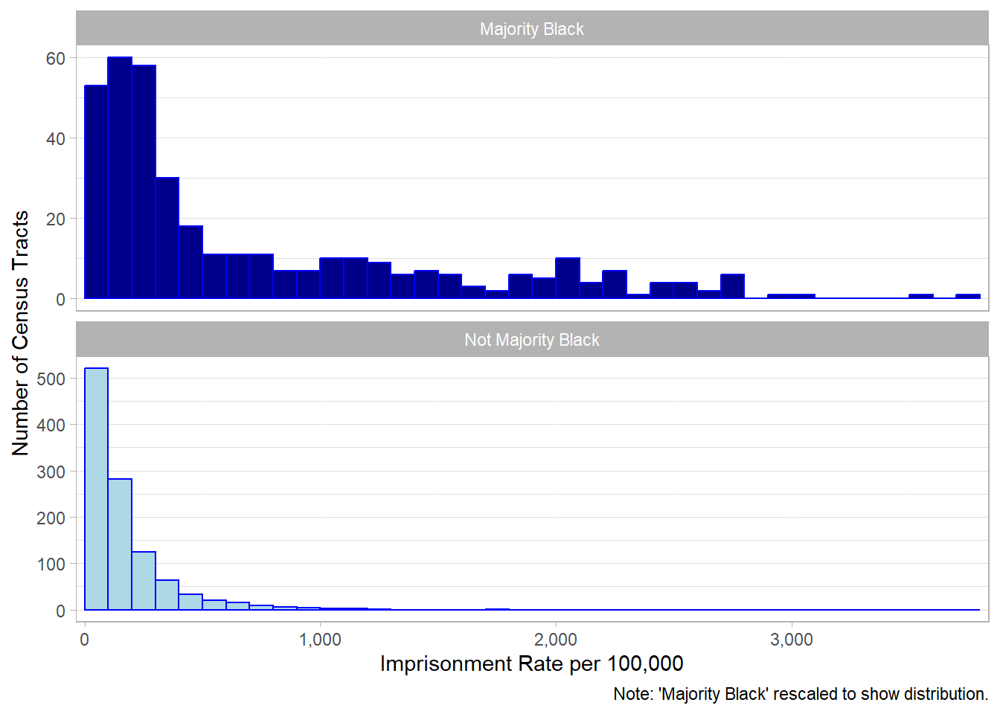
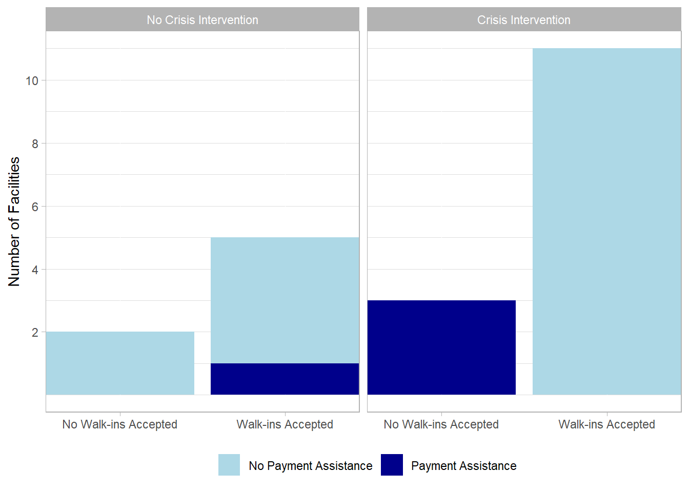
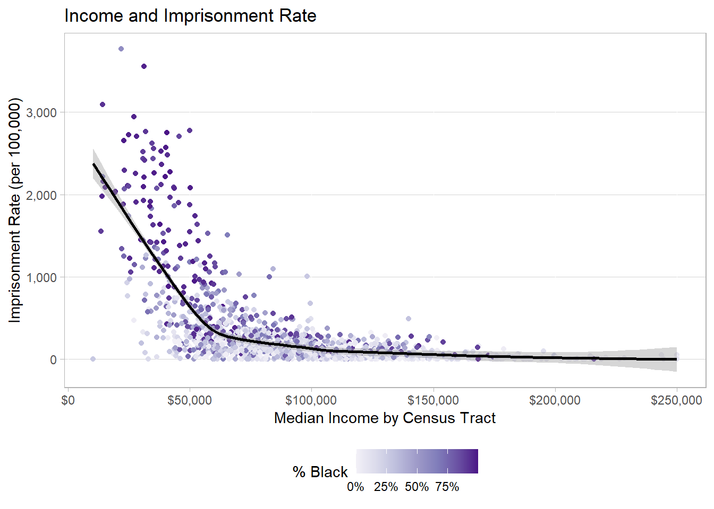
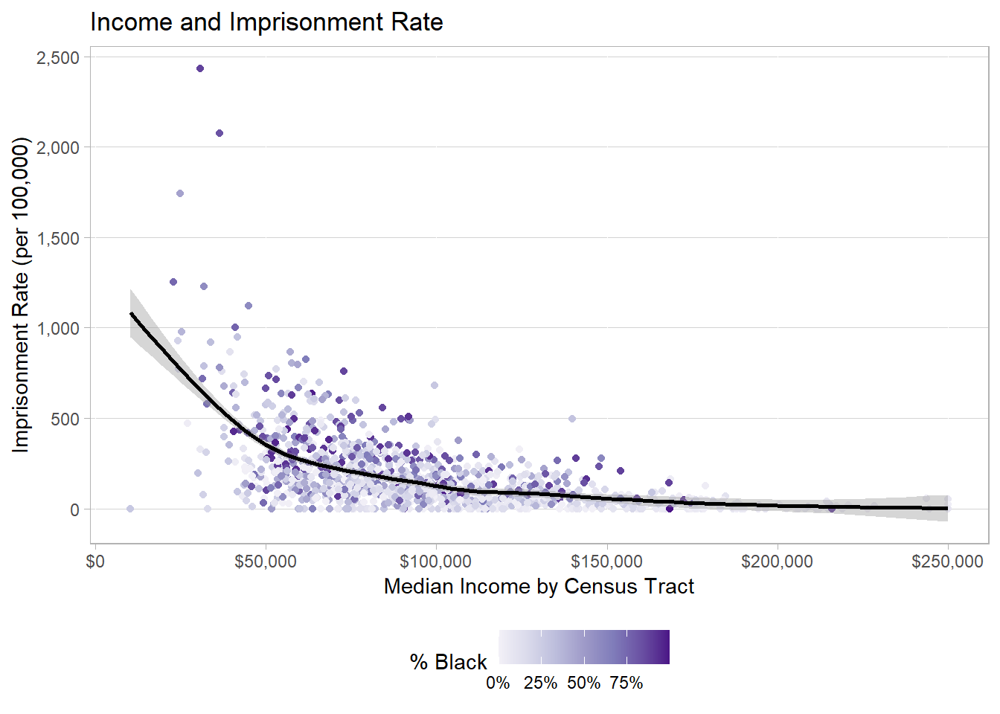
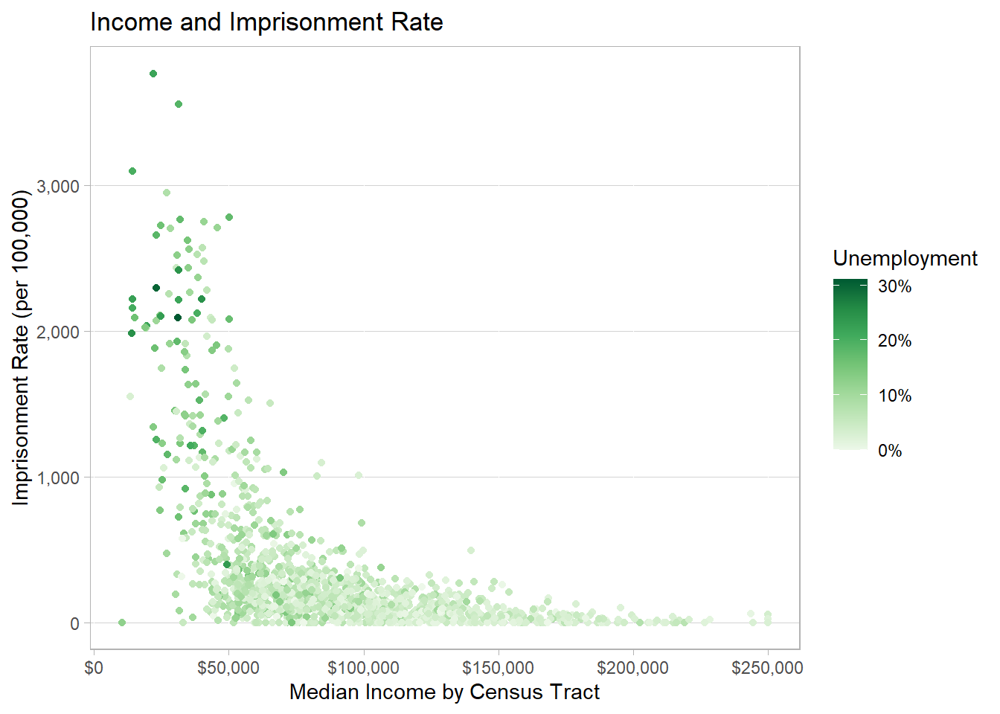
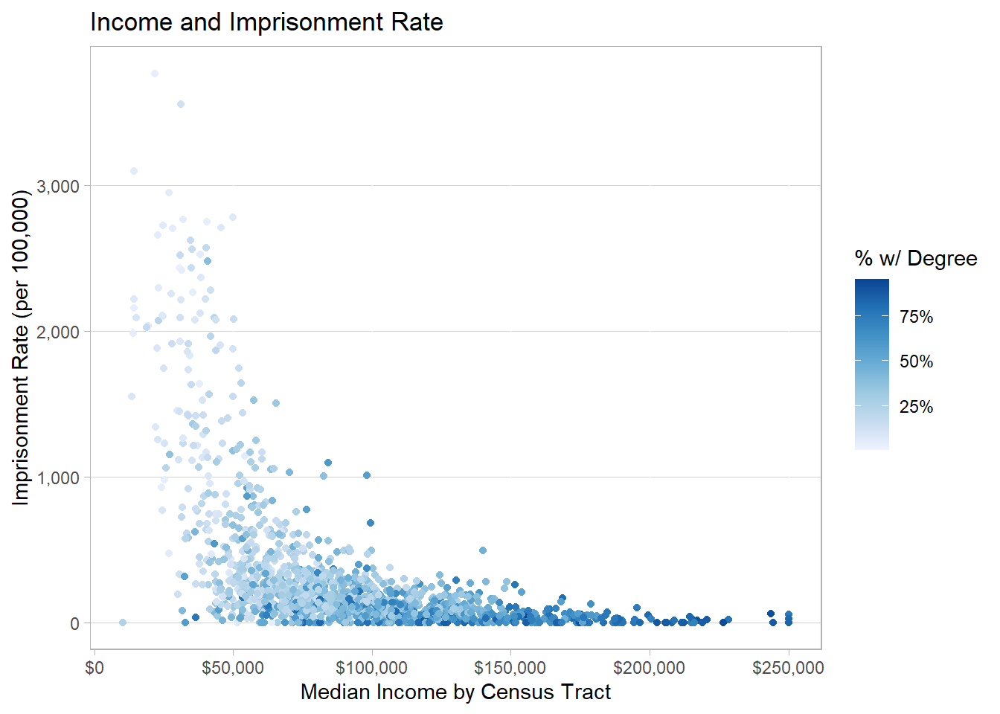
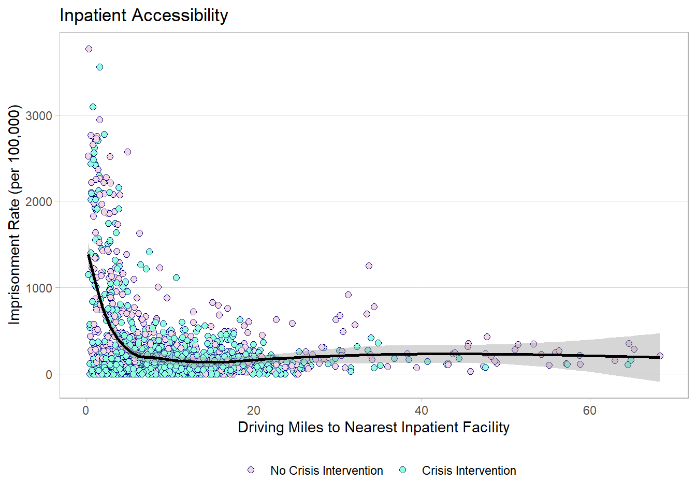
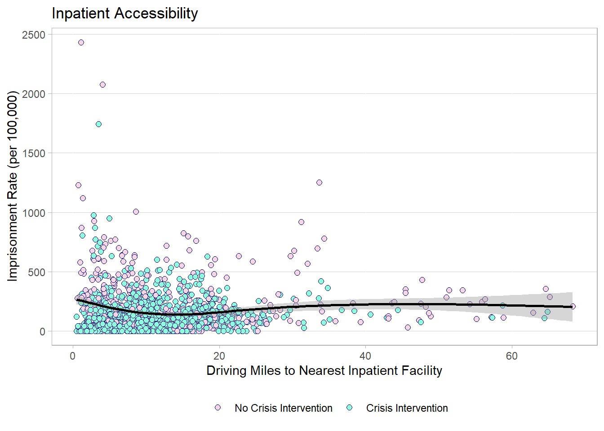

Introduction
Write a catchy door-kicker! Rise of mass incarceration… (Eason et al., 2017)
As the Prison Industrial Complex has expanded, scholars have examined the relationship between place and imprisonment in terms of places with high rates of reported crime, places with an overwhelming police presence, and the experiences of people in those communities and their relationship with law enforcement and the greater criminal justice system. It has been well documented that people of color, especially Black men, are more likely to become involved with the carceral system in the US (Eason et al., 2017; Pettit & Western, 2004; Sharkey, 2013; Simes, 2021). Other than race, class is the next predominant factor that has been addressed by previous research; while race and class are inextricably intertwined, class conditions that lead to imprisonment stretch beyond the urban and racial factors usually associated with crime and subjugation (Eason et al., 2017; Pettit & Western, 2004). The removal of individuals from an already struggling community only contributes to the cycle of instability that leads to crime and harm. These individuals are fathers, workers, caregivers, and other valuable members of their community; ripping them from their families not only impacts those who may have violated the law, but those they leave behind who may have been financially or emotionally dependent on them (Gilmore, 2007).
By using what is already known about the disparities in crime and punishment to investigate whether imprisonment is a viable solution to the harm caused by crime, questions about the prevention of crime and the reduction of harm can be answered. What are other similarities of places with high imprisonment rates that could be addressed to reduce imprisonment and aid the reintegration of those released back to their communities? While it may be impossible to determine if the shared characteristics of these locations are the cause of high rates of imprisonment, the result, or both, it is important to assess how these characteristics illuminate a piece of the greater influence of oppressive policies that fuel the Prison Industrial Complex as a whole.
Prison Gerrymandering
Prison gerrymandering is the practice of counting imprisoned people as residents of the place where they are imprisoned. The US Census defines residence as “where they live and sleep most of the time” (US Census Bureau, 2018). However, incarcerated people cannot vote or participate in the community where they are detained, and they often maintain ties to their community of origin and hope to have a future there when they return. The practice of counting these people as part of a community in which they have no role not only boosts representation for people around a prison but siphons resources and representation from their home communities (Benveniste, 2022). The community conditions of places with high imprisonment rates are viewed as both the cause and the consequence of over-policing and disenfranchisement through the Prison Industrial Complex as it has expanded in the last several decades. As more people are pulled away from their homes and counted in a place that does not value their interests, the barriers to opportunity are reinforced, and the cycle of subjugation continues. If the true purpose of imprisonment is rehabilitation, and the hope upon release is to participate in society fully, the interests and opportunities of these individuals should be considered by policymakers who will impact their future opportunities for success.
As of 2021, about a dozen states had ended prison gerrymandering which would impact the redistricting from the 2020 Census (Fenster, 2021). Because of the details involved with determining where and how to count these individuals in their home communities, data has been made available about precisely where people in prison are from, and where they intend to return to (Widra, 2023). This information is valuable and unique because it provides a link to determine the conditions that both create an environment where people feel the need to imprison larger portions of the population and create nuanced solutions to reduce both the harm that leads to imprisonment and the harm caused by it.
Mental Health, Crime, and Imprisonment
Mental health care is an important resource to ensure overall health and quality of life (Prince et al., 2007). The expansion of mental health care in the last few decades has been a response to a dire crisis that has long been ignored and stigmatized, and the benefits of access and awareness of mental health services are obvious to many who have utilized these services (Horton, 2007). Though access to mental health services is generally regarded as a positive influence on communities, the marginalized groups who often lack access to these services are the same communities who are targeted for high crime and imprisonment rates (Saxena et al., 2007). The link between access to mental health care, crime, and imprisonment is worth investigating to advocate for more resources to be made available for these communities and potentially prevent crime and harm before they happen, and as a result, reduce unnecessary imprisonment.
Three major components of mental health care and its relationship with imprisonment have been discussed. The first is mental health care as prevention of criminal and violent behavior (Brennan et al., 2000; Hodgins et al., 2005; Petras et al., 2008). Increased access to mental health care, especially on a large scale could lead to an overall reduction in violent and aggressive behavior, which comprises most of the crime residents are most concerned about.
The second component is mental health care for the residents impacted by the loss of a loved one or caretaker to imprisonment. Many people in prison are parents or otherwise supportive to other that they leave behind to serve their sentence (Wang, 2022). The social and economic consequences of mass imprisonment are far-reaching, and the individuals living through those consequences would certainly benefit from a support structure that values their mental health (Hatzenbuehler et al., 2015; Nosrati et al., 2019).
Lastly, prison can have a strong psychological impact on a person, and formerly imprisoned people may bring that trauma back to their communities when they are released. People in prison more likely to suffer from a mental health issue, both because, untreated, they are more likely to be arrested and because of the trauma endured throughout their sentence (Cloud, 2014; Quandt & Jones, 2021). The damage of imprisonment on mental health can include family disconnection, loss of autonomy and lack of purpose, and unpredictability (Quandt & Jones, 2021). Accessibility to mental health care may influence productive reintegration after release from prison.
With the new information about the home locations of imprisoned people, there are a number of relationships to investigate. The obvious demographic and economic factors should be considered and potentially controlled in many analyses. One spatial relationship that could be investigated using this data is the accessibility, in terms of distance, to mental health facilities. While there are many dimensions to the concept of accessibility, distance can be a useful indicator of at least when mental health care options are not available. Other dimensions to consider are the capacity of facilities, specific services provided, populations served, payment methods accepted, and outreach or awareness of services available. This analysis focuses on the dimension of physical location and proximity as an indicator of access to mental health care, specifically inpatient care for emergency situations.
Data Origins and Background
The data for this analysis comes from four different sources combined to create a versatile basis for geographic analysis of imprisonment and its relationship with location. The imprisonment data is from Prison Policy Initiative, a non-profit organization working to “expose the broader harm of mass criminalization” through data and research (Prison Policy Initiative, n.d.). The demographic data for the same census tracts is publicly available from the US Census Bureau (Census Bureau Data, 2020). Information about mental health facilities is available from the Substance Abuse and Mental Health Services Administration. Though the department provides data about many different aspects of mental health treatment and services, since this analysis is focused on the geography of imprisonment, the 2020 National Directory Of Mental Health Treatment Facilities contains locations and key characteristics for all facilities in the US (SAMHSA, 2020). Finally, the American Community Survey hosts geographic and demographic data at the census tract level that is available publicly. This data was used to map the previous data geographically and perform spatial analysis (Esri, 2020).
Prison Policy Initiative
The data gathered from the Prison Policy Initiative is cross-sectional data based on data from the 2020 Census and Maryland state data. The data originated as administrative data from the Maryland Department of Public Safety and Correctional Services and was combined with population data from the Census. The Prison Policy Initiative collected, calculated, and combined this data for public use for various levels of geography for Maryland and eleven other states where prison gerrymandering has been overruled.
Most of this data is from the 2020 Census. The imprisonment rate used the redistricting data from Maryland’s law ending prison gerrymandering to count prisoners as residents of their home neighborhoods instead of the location of the prison. The data was compiled using the data from the Maryland Department of Public Safety and Correctional Services which provided the home addresses of imprisoned people to redistricting officials to report them to the Census so they would be recorded in their home neighborhoods and not the prison’s location (Redistricting Data, 2020; Widra, 2023).
The original data had 1475 observations and the following 6 variables: FIPS code 2020, Maryland Census tracts, Number of people in state prison from each Census tract 2020, Census population 2020, Total population 2020, and Imprisonment rate per 100,000. The unit of observation for this analysis is the Census tract.
This data can be used to identify what characteristics are common among places with high imprisonment rates. Combined with demographic data about these locations and the proximity of mental health resources, this data can highlight areas in need of more mental health resources to reduce the harm caused by imprisonment and over-policing.
The original data is available from the Prison Policy Initiative website where the report was published. The census tract data for Maryland was copied into Excel, and the variables were renamed to be more usable in the analysis (The Justice Policy Institute & Prison Policy Initiative, 2023). The Prison Policy Initiative report provides thorough documentation of the data, its origins, and how it was processed. The variables have meaningful names, so there is no need for an official codebook.
The abolition of prison gerrymandering is still ongoing, so this data is only available in limited locations. However, it can be used to shed a light on the issue of prison gerrymandering and identify the common circumstances of places with high imprisonment rates.
US Census Data
The US Census collects cross-sectional data every ten years and makes it available publicly. Though the Census collects data about many different attributes at the individual and household level, the data for this analysis is aggregated to the census tract level. Four datasets were acquired from the online Census repository (Census Bureau Data, 2020). These included the following attributes: Employment (2020) with 1475 observations and 562 variables about employment rates; Geographic Mobility (2020) with 1475 observations and 1122 variables containing general demographic information about the population of each tract along with records of what types of people moved within and from outside the county, state, and country; Median Income (2020) with 1475 observations and 483 variables about the median income in each tract for different demographic groups; and Urban and Rural (2010) with 1406 observations and 9 variables contains the number of households in rural and urban areas.
In combination with the imprisonment data, the census data can show correlations between the racial and socioeconomic characteristics of an area and the rate of imprisonment. As stated earlier, while this may not be enough to prove causation, it does describe the systematic ways that incarceration and the Prison Industrial Complex as a whole impact people of color and low-income communities disproportionately.
The data was originally downloaded from the US Census website as a compressed file with three CSV files (Census Bureau Data, 2020). One file contained the data, another file contained the variable descriptions for each coded variable in the data file. The third file contained notes about the data and documentation about the methods used to collect and distribute the data. The US Census is a respected source for basic demographic information about each census tract. This is important to determine disparities in different areas that are linked to racial and socioeconomic status.
Substance Abuse and Mental Health Services Administration
Within the US Department of Health and Human Services, the Substance Abuse and Mental Health Services Administration collects and provides data about a wide array of treatments, services, and facilities for mental health and substance abuse (SAMHSA, n.d.). The data used for this specific analysis contains geographic and key characteristics of mental health facilities in Maryland. While some of these facilities also provide substance abuse treatment, facilities that exclusively provide substance abuse treatment are not included in this directory. The information about each facility is collected by a survey at the facility level; many data points are collected in the survey about specific treatments and capacities, but the information provided with geographic information in this directory only contained basic characteristics about the type of care, settings, operation, payments accepted, populations served, and others. Altogether, the National Directory of Mental Health Treatment Facilities 2020 provides a code for 103 different attributes for 235 facilities in Maryland (SAMHSA, 2020).
The information is provided in a PDF available to download. Since the data is not available in a format that is easily analyzed, the information needed to be extracted and separated into a readable format for analysis. Each facility is listed with a name, address, and code for each attribute associated with that facility. The directory contains a key at the beginning to interpret each code.
The locations and services provided by each facility can demonstrate how access and proximity may be related to the rate of imprisonment in a community. People in jails and prisons are more likely than the general population to suffer from a serious mental health issue, and the carceral system does the bare minimum to provide resources and health care to these individuals while they are incarcerated, let alone before and after their imprisonment (Cloud, 2014). The availability of mental health treatment, and especially inpatient treatment for individuals who may be a risk to the community, as an alternative to imprisonment has more potential to increase public safety and the well-being of communities.
American Community Survey - Context for Emergency Response
The American Community Survey (ACS) continuously collects data about many different variables to create estimates about the social, economic, and demographic characteristics of different communities. As part of the US Census, these data are available from the census bureau directly. However, for spatial analysis the ACS and Esri, a leader in geographic information system (GIS) software, host spatial data along with various attributes from the survey (Esri, 2020).
The Context for Emergency Response feature layer contains 1475 records for Maryland with 89 variables including the coordinates and shapes required to visually represent attributes geographically at the census tract level. Information about factors that relate to emergency response includes the amount of the population without health insurance, internet access at home, or a personal vehicle. The website hosting the data provides metadata and details about each variable available.
While the importance of these data for this analysis is primarily spatial, the variables about some of these characteristics could be useful for further research to identify other relationships with imprisonment rates of different communities. The spatial data for the census tracts can also be used to determine the distance to different types of mental health facilities.
The Raw Data
When acquiring observational data collected by another organization, there are limitations on what is available. Often a dataset will include many additional variables in addition to the variables required to answer a research question.
The data from the Prison Policy Initiative was already normalized and estimated in relation to population data from the Census. Because this element was already processed and calculated, there are no missing values. Several outliers exist because of extremely low populations of several census tracts, the imprisonment of only one resident shows as a high proportion when normalized at a rate per 100,000 residents.
The US Census provides hundreds of attributes at the census tract level, however, these are often raw counts of individuals or households for each category. The estimates must be divided by the total counts to calculate the percentage of the population for each census tract for equal comparison. As with many large repositories of data, these datasets are missing some values for various variables. For the useful variables missing values, they are scarce and random; the values can easily be imputed for the important variables by finding the mean within the county of the tract. While outliers may exist in some categories, none were prominent in the variables selected for analysis. The values for each variable are numbers (with the exception of the geographic identifier and the name of the tract), however, they are not always stored as numbers and will need to be properly formatted.
The data about mental health facilities came from the National Directory of Mental Health Treatment Facilities 2020 as part of the Behavioral Health Services Information System Series (SAMHSA, 2020). Since the data is in PDF format, the information needs to be extracted and parsed into an analytic format. Each facility name is accompanied by abbreviated codes that need to be converted into dummy variables. Since this is a comprehensive list of facilities, there are no missing values. The values for facility name and address are strings and do not need to be formatted; however, the address values will be used to obtain the geographic data about their locations on a map and in relation to each census tract.
The spatial data from the ACS is available from the Living Atlas with variables for both the raw counts and the percentages for each attribute as a feature layer for use in ArcGIS Pro (Living Atlas of the World, n.d.). The data did contain some missing values, but only in three observations and for variables not used for this analysis. Since the data came from a curated source, it was properly formatted as the appropriate data types for both spatial and quantitative analysis.
Getting an Analytic Dataset
Write an introduction to the processing of the data.
Include an outline of the process including merging, cleaning, manipulating, and aggregating the data.
Merging
Census Tracts
The imprisonment rate data was merged with several tables from the US Census. These were almost all an exact match because each Census tract has a unique identifier to link it from the data from other datesets. The exception was for the Urban and Rural data because that was only available from 2010 which had less tracts than the 2020 data. The 2010 Urban and Rural census data was joined with 2010 census tract shapefiles in ArcGIS Pro. The spatial data was then apportioned to 2020 tracts based on the area of overlap and weighted by population.
After merging the census data with the imprisonment data, the variables with relevant values were extracted to removed unneeded information regarding annotations and margins of error. The remaining variables were renamed with more meaningful names to better reflect the meaning of the values.
The merged data from the Prison Policy Initiative and the Census were joined to the ACS tracts in ArcGIS Pro for mapping. Several variables from ACS Context for Emergency Response were added to the merged dataset including percent less than 18 years old, percent 65 Years and over, percent in dependent age groups (under 18 and 65+), percent of households with no vehicle available, percent with a disability, percent with Medicaid coverage, percent with Medicare coverage, percent with no health insurance coverage, percent without a smart phone, and percent without internet access at home. The new variables were renamed with more meaningful names to better reflect the meaning of the values.
Mental Health Facilities
After extraction from the directory, the dummy variables for mental health facilities in Maryland were renamed with meaningful names, and the addresses for each facility were geocoded in ArcGIS Pro. The geocoded facilities were also joined the newly merged data by spatial proximity. The distance to the closest mental health facility from the edge each tract was calculated in ArcGIS Pro in feet (as the crow flies) and then converted to miles. The dummy variables for the closest facility was also added to the dataset. This process was repeated for distance to the closest inpatient mental health facility, the closest inpatient facility providing crisis intervention, and the closest inpatient facility accepting walk-ins. Using ArcGIS, the total driving distance in miles and minutes was also calculated from the geographic center of each tract to the closest facility in each of these categories.
The complete dataset includes the imprisonment rate values from the Prison Policy Initiative, the selected attributes from the various Census and ACS tables, and the name, address, and dummy variables for the the closest mental health facility, the closest inpatient facility, the closest inpatient facility with crisis intervention, and the the closest inpatient facility accepting walk-ins, along with the linear distance, driving distance, and driving time to these facilities. These facility attributes were chosen because they represent opportunities for an alternative response to a dangerous situtation that may be better resolved with mental health treatment than law enforcement and imprisonment. If individuals who are imprisoned were able to access mental health treatment, and especially inpatient treatment if they may be a threat, in a time of crisis instead of being forced into the stressful and prejudiced criminal justice system, immediate and long term harm could be avoided.
Cleaning
Most of the data collected was mostly clean. A few missing values, misformatted values, and outliers needed to be dealt with. By visually analyzing the raw data, sanity checks, and validation, these issues were identified and resolved. In the imprisonment data, some of the total population values were miscalculated and were manually changed by adding the number of imprisoned individuals to the Census population values in Excel.
Census data contains many variables that describe both the attributes and the accuracy of the attribute’s values. Many of these attributes were removed altogether, and for others, only the annotation variables were removed, leaving only the relevant variables. Some of the relevant variables were formatted incorrectly and needed to be converted to a numeric format. Several variables contained missing values, and these were imputed with the mean value of that variable for the tract’s county. The last issue with these data was outliers. Because the imprisonment rate is calculated per 100,000 residents, census tracts with extremely low populations may have an extremely high imprisonment rate, even if only one person is from that tract. To resolve this issue, all tracts with less than 100 total population were excluded. Most of these tracts also had very little land area, and their absence should not impact the results.
The ACS data also contained some missing values, but these were not imputed because the variables are not used in this analysis. The total number of observations remaining after cleaning the data fell to 1458 census tracts from the original 1475.
Manipulating
Once the complete dataset had been merged and cleaned, some new variables were created to better represent the data for interpretation. Several of the census variables were converted from raw counts to percentages by dividing the counts by the total and multiplying by 100. These new variables include percent Black, White, and other race; the percent with no high school diploma, only a high school diploma, some college, bachelor’s degree, and advanced degree (bachelor’s and advanced degree was also combined to have the percent of the population with at least a bachelor’s degree); percent under the poverty level; and percent of households who own and rent.
Some of the new percent variables were further converted into dummy variables to represent tracts with either a majority or a value above or below the average. The Black and White ratios were converted into majority dummy variables; the same was done for the homeownership and renters variables. The percent of the tract with a bachelor’s degree or higher, percent under poverty, and the unemployment rate were converted to variables to indicate if the value was above or below the mean. Each of these variables was also converted into categorical variables with descriptive labels.
In order to be able to perform analysis at the county level as well as the tract level, the county name was extracted from the tract name variable. The new variable would contain only the name of the county. Because of a formatting error with the apostrophes in some of the county names, some of the values needed to be manually cleaned in Excel.
Aggregating
Create some new variables that are common across observations. For example, if you have individual wages, you can calculate the median wage in each state and attach that value to each individual.
County to Tract
Analysis of the Data
At this point, you should have a clean dataset, ready for analysis. In this section, you should let readers know more about your clean data through tables and figures.
You should also show the relationship between some variables, again in tables or figures. Finally, you should run at least one regression. While you have some leeway here, you should strongly consider doing the following:
Describe and detail your analytic dataset. How has it changed from the raw data?
Overall
Create summary statistics of the key variables (put this in a table).
| Mean | Median | Std.Dev | Min | Max | |
|---|---|---|---|---|---|
| Imprisonment Rate per 100,000 | 307 | 135 | 493 | 0 | 3,767 |
| Total Population | 4,247 | 4,048 | 1,700 | 621 | 15,052 |
| Median Income | $92,707 | $87,197 | $41,733 | $10,391 | $250,000 |
| % Black | 32.0% | 19.4% | 30.8% | 0.0% | 99.8% |
| % with Bachelor's Degree | 39.8% | 37.1% | 20.7% | 0.6% | 95.5% |
| % Under Poverty Level | 10.0% | 7.2% | 9.5% | 0.0% | 86.3% |
| Unemployment Rate | 5.4% | 4.5% | 3.9% | 0.0% | 31.2% |
| % Renter-Occupied Housing | 32.1% | 25.2% | 24.2% | 0.0% | 100% |
| % with Disability | 11.7% | 10.5% | 5.7% | 0.4% | 41.8% |
| % with Medicaid | 14.4% | 11.5% | 11.1% | 0.0% | 64.0% |
| % with Medicare | 4.2% | 3.6% | 2.9% | 0.0% | 23.0% |
| % with No Health Insurance | 6.0% | 4.4% | 5.5% | 0.0% | 58.3% |
| % Rural | 13.1% | 0.0% | 28.7% | 0.0% | 100% |
| Mean | Median | Std.Dev | Min | Max | |
|---|---|---|---|---|---|
| Miles to Mental Health Facility* | 1.8 | 0.8 | 3.0 | 0.0 | 33.2 |
| Travel Time to Mental Health Facility | 9 min | 7 min | 7 min | 0 min | 76 min |
| Driving Miles to Mental Health Facility | 4.4 | 2.7 | 5.4 | 0.1 | 63.2 |
| Miles to Inpatient Facility* | 6.6 | 5.1 | 6.1 | 0.0 | 37.7 |
| Travel Time to Inpatient Facility | 19 min | 17 min | 12 min | 2 min | 92 min |
| Driving Miles to Inpatient Facility | 11.2 | 9.1 | 9.6 | 0.3 | 68.3 |
| Miles to Inpatient Facility with Crisis Intervention* | 10.1 | 6.5 | 12.3 | 0.0 | 85.6 |
| Travel Time to Inpatient Facility with Crisis Intervention | 26 min | 19 min | 27 min | 2 min | 175 min |
| Driving Miles to Inpatient Facility with Crisis Intervention | 17.6 | 10.9 | 23.8 | 0.3 | 151.9 |
| Miles to Inpatient Facility accepting Walk-ins* | 9.6 | 5.9 | 13.9 | 0.0 | 90.0 |
| Travel Time to Inpatient Facility accepting Walk-ins | 24 min | 18 min | 26 min | 2 min | 161 min |
| Driving Miles to Inpatient Facility accepting Walk-ins | 16.3 | 10.0 | 23.3 | 0.3 | 140.8 |
| * as the crow flies |
| All | Count All | Inpatient | Count | |
|---|---|---|---|---|
| Inpatient Services | 8.9% | 21 | 100% | 21 |
| Outpatient Services | 86.8% | 204 | 61.9% | 13 |
| Partial Hospitalization Services | 15.3% | 36 | 85.7% | 18 |
| Residential Services | 12.8% | 30 | 9.5% | 2 |
| Telehealth Services | 34.5% | 81 | 23.8% | 5 |
| Serves Adults | 91.1% | 214 | 100% | 21 |
| Crisis Intervention | 35.3% | 83 | 66.7% | 14 |
| Walk-ins Accepted | 22.6% | 53 | 76.2% | 16 |
| Federally Qualified Health Center | 13.2% | 31 | 0.0% | 0 |
| Accepts Medicaid | 91.5% | 215 | 100% | 21 |
| Accepts Medicare | 66.8% | 157 | 100% | 21 |
| Accepts VA | 11.5% | 27 | 33.3% | 7 |
| Payment Assistance | 18.3% | 43 | 19.0% | 4 |
| Sliding Scale | 34.0% | 80 | 14.3% | 3 |
Describe other key elements to the key variables. This could be cross-tabs, figures, or charts (e.g., distribution or frequency counts of a variable). Make sure any figures are self-explanatory and include notes.


Run at least one regression and output the results in a table. Describe the results.
| Median Income | % Black | % w/ Degree | Unemployment | All | |
|---|---|---|---|---|---|
| (Intercept) | 879.10*** | 14.39 | 772.66*** | −78.41*** | 257.50*** |
| (32.76) | (0.94) | (31.73) | (−4.27) | (7.03) | |
| Median Income | −6.18*** | −2.16*** | |||
| (−23.40) | (−6.32) | ||||
| % Black | 9.14*** | 5.14*** | |||
| (26.53) | (14.54) | ||||
| % w/ Degree | −11.71*** | −2.65*** | |||
| (−21.57) | (−3.90) | ||||
| Unemployment | 70.86*** | 35.09*** | |||
| (25.78) | (12.24) | ||||
| N | 1458 | 1458 | 1458 | 1458 | 1458 |
| R2 | 0.27 | 0.33 | 0.24 | 0.31 | 0.49 |
| Note: t statistics in parentheses (+ p < 0.1, * p < 0.05, ** p < 0.01, *** p < 0.001) |
| Median Income | % Black | % w/ Degree | Unemployment | All | |
|---|---|---|---|---|---|
| (Intercept) | 417.69*** | 108.60*** | 389.31*** | 64.23*** | 328.32*** |
| (32.92) | (14.69) | (35.66) | (6.46) | (18.29) | |
| Median Income | −2.48*** | −1.01*** | |||
| (−20.81) | (−5.93) | ||||
| % Black | 2.40*** | 1.22*** | |||
| (12.40) | (6.83) | ||||
| % w/ Degree | −5.25*** | −2.95*** | |||
| (−21.96) | (−8.57) | ||||
| Unemployment | 22.13*** | 6.58*** | |||
| (12.88) | (3.95) | ||||
| N | 1260 | 1260 | 1260 | 1260 | 1260 |
| R2 | 0.26 | 0.11 | 0.28 | 0.12 | 0.35 |
| Note: t statistics in parentheses (+ p < 0.1, * p < 0.05, ** p < 0.01, *** p < 0.001) |
| Mental Health Facility | Inpatient Facility | Inpatient with Crisis Intervention | Inpatient accepting Walk-ins | All | |
|---|---|---|---|---|---|
| (Intercept) | 393.94*** | 453.83*** | 330.75*** | 329.99*** | 457.68*** |
| (24.20) | (23.75) | (20.62) | (20.97) | (23.91) | |
| Mental Health Facility | −19.98*** | −10.55*** | |||
| (−8.48) | (−3.52) | ||||
| Inpatient Facility | −13.18*** | −13.48*** | |||
| (−10.18) | (−7.35) | ||||
| Inpatient with Crisis Intervention | −1.37* | 0.62 | |||
| (−2.53) | (0.57) | ||||
| Inpatient accepting Walk-ins | −1.43** | 2.12+ | |||
| (−2.59) | (1.90) | ||||
| N | 1458 | 1458 | 1458 | 1458 | 1458 |
| R2 | 0.05 | 0.07 | 0.00 | 0.00 | 0.08 |
| Note: t statistics in parentheses (+ p < 0.1, * p < 0.05, ** p < 0.01, *** p < 0.001) |
| Mental Health Facility | Inpatient Facility | Inpatient with Crisis Intervention | Inpatient accepting Walk-ins | All | |
|---|---|---|---|---|---|
| (Intercept) | 193.96*** | 180.27*** | 126.41*** | 136.81*** | 175.38*** |
| (26.39) | (19.96) | (18.58) | (20.29) | (20.69) | |
| Mental Health Facility | −4.23*** | −5.13*** | |||
| (−4.26) | (−4.42) | ||||
| Inpatient Facility | −0.56 | −3.71*** | |||
| (−0.99) | (−5.15) | ||||
| Inpatient with Crisis Intervention | 2.35*** | 2.64*** | |||
| (11.00) | (6.25) | ||||
| Inpatient accepting Walk-ins | 1.98*** | 0.91* | |||
| (8.98) | (2.11) | ||||
| N | 1260 | 1260 | 1260 | 1260 | 1260 |
| R2 | 0.01 | 0.00 | 0.09 | 0.06 | 0.15 |
| Note: t statistics in parentheses (+ p < 0.1, * p < 0.05, ** p < 0.01, *** p < 0.001) |
| Maryland | Maryland w/o Baltimore | Distance | Distance w/o Baltimore | All Factors | All Factors w/o Baltimore | |
|---|---|---|---|---|---|---|
| (Intercept) | 257.50*** | 328.32*** | 457.68*** | 175.38*** | 366.41*** | 320.98*** |
| (7.03) | (18.29) | (23.91) | (20.69) | (9.07) | (16.75) | |
| Median Income | −2.16*** | −1.01*** | −2.12*** | −0.77*** | ||
| (−6.32) | (−5.93) | (−6.26) | (−4.71) | |||
| % Black | 5.14*** | 1.22*** | 5.22*** | 1.53*** | ||
| (14.54) | (6.83) | (14.24) | (8.61) | |||
| % w/ Degree | −2.65*** | −2.95*** | −2.99*** | −2.96*** | ||
| (−3.90) | (−8.57) | (−4.37) | (−8.90) | |||
| Unemployment | 35.09*** | 6.58*** | 32.59*** | 4.38** | ||
| (12.24) | (3.95) | (11.71) | (2.78) | |||
| Mental Health Distance | −10.55*** | −5.13*** | 8.89*** | −0.87 | ||
| (−3.52) | (−4.42) | (3.83) | (−0.84) | |||
| Inpatient Distance | −13.48*** | −3.71*** | −13.59*** | −5.03*** | ||
| (−7.35) | (−5.15) | (−10.21) | (−8.40) | |||
| Inpatient with Crisis Intervention Distance | 0.62 | 2.64*** | 3.69*** | 2.98*** | ||
| (0.57) | (6.25) | (4.60) | (8.49) | |||
| Inpatient accepting Walk-ins Distance | 2.12+ | 0.91* | −2.47** | −0.32 | ||
| (1.90) | (2.11) | (−3.00) | (−0.88) | |||
| N | 1458 | 1260 | 1458 | 1260 | 1458 | 1260 |
| R2 | 0.49 | 0.35 | 0.08 | 0.15 | 0.53 | 0.44 |
| Note: t statistics in parentheses (+ p < 0.1, * p < 0.05, ** p < 0.01, *** p < 0.001) |
What are the key relationships/associations among various variables that you can identify in your dataset?
What questions can you answer with your dataset?
Do you find strong correlations between variables that you expected or did not expect?
You should present some of these results in tables and figures.
Race and Income
Expected results. Strong correlation between both race and income with imprisonment as well as a strong correlation between race and income themselves. Income as a factor in rural areas that are not majority white and how economic indicators are related to imprisonment and criminal behavior.


Unemployment and Education
Expected results, however, these indicators are targetable. Employment and educational opportunities can be influenced by policy to target these communities to reduce the incentive and necessity of criminal behavior and give surviors of violence the opportunity to escape, heal, and end the cycle of violence.


Access to Mental Health Care
While only significant when excluding Baltimore city, proximity to mental health care can not only prevent harmful criminal behavior, it can serve as alternative for dangerous situations before they become criminal. Mental health accessibility is also important for formerly incarcerated people returning to their communities to heal from the trauma of imprisonment and become capable of reintegrating and supporting their community.
While Baltimore has the highest concentration of imprisonment and proximity to inpatient mental health facilities, there are only four facilities in Baltimore city. Though the exact capacity of these facilities is unknown, the average inpatient capacity for inpatient facilities is [xxx], which is not likely to be sufficient to provide the necessary services for all those in Baltimore who would benefit. In addition to other barriers, such as health insurance coverage and transportation to facilities, more research is needed to assess the most effective expansion of service to target the neighborhood most in need.



Discussion and Conclusion
Discuss limitations, further research, and policy implications.
Limitations
Data needed about capacity — Four inpatient facilities may be in close proximity to Baltimore residents, but capacity may be the issue in urban areas.
Further Research
Lack of health insurance for formerly imprisoned residents as a barrier to access mental health care.
Datasets:
- Maryland tracts with nearest facilities and all characteristics
- Maryland tracts with nearest facilities and select characteristics
- Maryland facilities list with all characteristics
Policy Implications
Funding emergency mental health care to divert people in need of health care away from the carceral system both through prevention and treatment.
Many violent conflicts require de-escalation and treatment, not confinement.
Funding and supporting mental health care accessibility can enable people to receive the health care and resources they need instead of becoming entrenched in the endless cycle of incarceration and harm from the Prison Industrial Complex and all its extremities.
Appendix
R Code
library(tidyverse)
library(modelsummary)
library(scales)
library(readr)
library(tufte)
library(sf)
library(broom)
library(kableExtra)
library(tinytex)
library(mice)
library(lattice)
## Load Census Data
GEOGRAPHIC_MOBILITY <- read_csv("data/GEOGRAPHIC_MOBILITY.csv")
EMPLOYMENT <- read_csv("data/EMPLOYMENT.csv")
MEDIAN_INCOME <- read_csv("data/MEDIAN_INCOME.csv")
## Load Imprisonment Data
Imprisonment_rates <- read_csv("data/Imprisonment_rates.csv")
## Extract FIPS codes
GEOGRAPHIC_MOBILITY$FIPS <- substr(GEOGRAPHIC_MOBILITY$GEO_ID,
nchar(GEOGRAPHIC_MOBILITY$GEO_ID) - 10,
nchar(GEOGRAPHIC_MOBILITY$GEO_ID))
EMPLOYMENT$FIPS <- substr(EMPLOYMENT$GEO_ID,
nchar(EMPLOYMENT$GEO_ID) - 10,
nchar(EMPLOYMENT$GEO_ID))
MEDIAN_INCOME$FIPS <- substr(MEDIAN_INCOME$GEO_ID,
nchar(MEDIAN_INCOME$GEO_ID) - 10,
nchar(MEDIAN_INCOME$GEO_ID))
## Joining
data1 <- merge(Imprisonment_rates, GEOGRAPHIC_MOBILITY, by = "FIPS")
data1 <- data1 %>%
merge(EMPLOYMENT, by = "FIPS") %>%
merge(MEDIAN_INCOME, by = "FIPS")
## Select Estimates Columns
data_all <- select(data1, "FIPS",
"Tract",
"State_Prison_Num",
"Census_Pop",
"Total_Pop",
"Imprisonment_Rate",
ends_with('E'))
## Renaming
data_all <- data_all %>%
rename("Total_Pop1" = "S0701_C01_001E",
"Total_Pop18_24" = "S0701_C01_004E",
"Total_Pop25_34" = "S0701_C01_005E",
"Total_Pop35_44" = "S0701_C01_006E",
"Total_Pop45_54" = "S0701_C01_007E",
"Total_Pop55_64" = "S0701_C01_008E",
"Total_Pop65_74" = "S0701_C01_009E",
"Total_Pop75" = "S0701_C01_010E",
"MedianAge" = "S0701_C01_011E",
"Male" = "S0701_C01_012E",
"Female" = "S0701_C01_013E",
"OneRaceTotal" = "S0701_C01_014E",
"White" = "S0701_C01_015E",
"Black" = "S0701_C01_016E",
"AIAN" = "S0701_C01_017E",
"Asian" = "S0701_C01_018E",
"NHPI" = "S0701_C01_019E",
"Other" = "S0701_C01_020E",
"TwoRaces" = "S0701_C01_021E",
"Latinx" = "S0701_C01_022E",
"WhiteNonLatinx" = "S0701_C01_023E",
"Total_Pop25" = "S0701_C01_033E",
"NoHS" = "S0701_C01_034E",
"HS" = "S0701_C01_035E",
"SomeCollege" = "S0701_C01_036E",
"Bachelors" = "S0701_C01_037E",
"GradAdv" = "S0701_C01_038E",
"PovStatusDeterminedTotal" = "S0701_C01_049E",
"Under100PovLevel" = "S0701_C01_050E",
"100_149PovLevel" = "S0701_C01_051E",
"150PlusPovLevel" = "S0701_C01_052E",
"Housed" = "S0701_C01_053E",
"HousedOwner" = "S0701_C01_054E",
"HousedRenter" = "S0701_C01_055E",
"UnempRate16" = "S2301_C04_001E",
"IncomeMedian" = "S1903_C03_001E",
"IncomeMedianWhite" = "S1903_C03_002E",
"IncomeMedianBlack" = "S1903_C03_003E")
## Cleaning
clean <- data_all %>%
select(-grep("_C0", names(data_all)))
clean1 <- clean %>%
select(-Tract) %>%
mutate_all(as.numeric)
MD <- clean %>%
select(FIPS, Tract) %>%
merge(clean1, by = "FIPS")
## Extract County Column
MD$County <- substr(MD$Tract,1,regexpr(",",MD$Tract)-1)
MD$County <- gsub(" County", "", MD$County)
## Calculate Percentages
MD_ <- MD %>%
mutate(Total_Pop18 = Total_Pop18_24 + Total_Pop25_34 +
Total_Pop35_44 + Total_Pop45_54 + Total_Pop55_64 +
Total_Pop65_74 + Total_Pop75,
pctWhite = (White / OneRaceTotal) * 100,
pctBlack = (Black / OneRaceTotal) * 100,
pctOther = ((AIAN + Asian + NHPI + Other) / OneRaceTotal) * 100,
pctNoHS = (NoHS / Total_Pop25) * 100,
pctHS = (HS / Total_Pop25) * 100,
pctSomeCollege = (SomeCollege / Total_Pop25) * 100,
pctBachelors = (Bachelors / Total_Pop25) * 100,
pctGradAdv = (GradAdv / Total_Pop25) * 100,
pctBachelorsUp = ((Bachelors / Total_Pop25) + (GradAdv / Total_Pop25)) * 100,
pctUnderPoverty = (Under100PovLevel / PovStatusDeterminedTotal) * 100,
pctOwner = (HousedOwner / Housed) * 100,
pctRenter = (HousedRenter / Housed) * 100)
## Print
# write.csv(MD_, "data/data.csv", row.names=FALSE)
## Manually fix County values in Excel and reload
MD_ <- read_csv("data/data.csv")
## Save data
saveRDS(MD_, file = "data/MD_01.RDS")
MD_ <- readRDS("data/MD_01.RDS")
## Drop Tracts with a population below 100 to reduce outliers.
MD <- MD_ %>%
filter(Total_Pop >= 100)
## Select Columns
MD <- MD %>%
select(FIPS, Tract, County, Imprisonment_Rate, Total_Pop,
IncomeMedian, pctWhite, pctBlack, pctBachelorsUp,
pctUnderPoverty, pctOwner, pctRenter, UnempRate16)
## Aggregate to the County Level
MD_counties <- MD %>%
select(FIPS, Tract, County, Imprisonment_Rate, Total_Pop,
IncomeMedian, pctWhite, pctBlack, pctBachelorsUp,
pctUnderPoverty, pctOwner, pctRenter, UnempRate16) %>%
drop_na(FIPS, Tract, County, Imprisonment_Rate, Total_Pop,
IncomeMedian, pctWhite, pctBlack, pctBachelorsUp,
pctUnderPoverty, pctOwner, pctRenter, UnempRate16) %>%
group_by(County) %>%
summarise(Imprisonment_RateCounty = mean(Imprisonment_Rate),
Total_PopCounty = sum(Total_Pop),
IncomeMedianCounty = mean(IncomeMedian),
pctWhiteCounty = mean(pctWhite),
pctBlackCounty = mean(pctBlack),
pctBachelorsUpCounty = mean(pctBachelorsUp),
pctUnderPovertyCounty = mean(pctUnderPoverty),
pctOwnerCounty = mean(pctOwner),
pctRenterCounty = mean(pctRenter),
UnempRate16County = mean(UnempRate16))
## Make dummys for missings
MD <- MD %>%
mutate(missing = is.na(MD$IncomeMedian))
## Add County level values to tract data and replace NAs with the county mean
MD <- MD %>%
merge(MD_counties, by = "County")
MD$IncomeMedian <- ifelse(is.na(MD$IncomeMedian),
MD$IncomeMedianCounty,
MD$IncomeMedian)
MD$pctUnderPoverty <- ifelse(is.na(MD$pctUnderPoverty),
MD$pctUnderPovertyCounty,
MD$pctUnderPoverty)
MD$pctRenter <- ifelse(is.na(MD$pctRenter),
MD$pctRenterCounty,
MD$pctRenter)
MD$pctOwner <- ifelse(is.na(MD$pctOwner),
MD$pctOwnerCounty,
MD$pctOwner)
MD$UnempRate16 <- ifelse(is.na(MD$UnempRate16),
MD$UnempRate16County,
MD$UnempRate16)
## Create dummy variables
MD <- MD %>%
mutate(white = case_when(pctWhite > 50 ~ 1, pctWhite <= 50 ~ 0),
black = case_when(pctBlack > 50 ~ 1, pctBlack <= 50 ~ 0),
bachelorsUp = case_when(pctBachelorsUp > mean(pctBachelorsUp) ~ 1,
pctBachelorsUp <= mean(pctBachelorsUp) ~ 0),
poverty = case_when(pctUnderPoverty > mean(pctUnderPoverty) ~ 1,
pctUnderPoverty <= mean(pctUnderPoverty) ~ 0),
owner = case_when(pctOwner > 50 ~ 1, pctOwner <= 50 ~ 0),
renter = case_when(pctRenter > 50 ~ 1, pctRenter <= 50 ~ 0),
unemp = case_when(UnempRate16 > mean(UnempRate16) ~ 1,
UnempRate16 <= mean(UnempRate16) ~ 0)) %>%
mutate(black_cat = factor(black, labels = c("Not Majority Black",
"Majority Black")),
white_cat = factor(white, labels = c("Not Majority White",
"Majority White")),
bachelors_cat = factor(bachelorsUp,
labels = c("Percent with Bachelor's Dergree or Higher Below Average",
"Percent with Bachelor's Dergree or Higher Above Average")),
poverty_cat = factor(poverty,
labels = c("Percent Under Poverty Level Below Average",
"Percent Under Poverty Level Above Average")),
owner_cat = factor(owner, labels = c("Not Majority Homeowner",
"Majority Homeowner")),
renter_cat = factor(renter, labels = c("Not Majority Renter",
"Majority Renter")),
bachelors_cat = factor(bachelorsUp,
labels = c("Percent with Unemployment Below Average",
"Percent with Unemployment Above Average")))
## Print
write.csv(MD_counties, "data/MD_counties.csv", row.names=FALSE)
write.csv(MD, "data/MD.csv", row.names=FALSE)
## Save data
saveRDS(MD, file = "data/MD_02.RDS")
saveRDS(MD_counties, file = "data/MD_counties_01.RDS")
## Extract facilities data from PDF.
## Parse data to create a dataset with facility name, address,
## and services in Excel.
## Rename facilities variables.
## Geocode facilities data in ArcGIS Pro.
##
## Join MD.csv to ACS tracts in ArcGIS for mapping.
## Join geocoded facilities with joined MD.csv and ACS tracts in ArcGIS Pro.
##
## Calculate the distance to mental health facilities in ArcGIS Pro, and
## then convert to miles.
## Calculate the distance to inpatient mental health facilities in ArcGIS
## Pro, and then convert to miles.
## Calculate the distance to inpatient mental health facilities with Crisis
## Intervention in ArcGIS Pro, and then convert to miles.
## Calculate the distance to inpatient mental health facilities accepting
## Walk-ins in ArcGIS Pro, and then convert to miles.
##
## Join 2010 Urban/Rural census data with 2010 ACS tract shapefiles in
## ArcGIS Pro.
## Apportion 2010 census tracts to 2020 tracts in ArcGIS Pro.
##
## Load Facilities Data
MD_GIS <- read_csv("data/MD_GIS.csv")
## Rename Facilities Variables
MD_GIS <- MD_GIS %>%
select(FIPS,
County,
Tract,
Imprisonment_Rate,
Total_Pop,
IncomeMedian,
pctWhite,
pctBlack,
pctBachelorsUp,
pctUnderPoverty,
pctOwner,
pctRenter,
UnempRate16,
B01001_calc_pctLT18E,
B01001_calc_pctGE65E,
B01001_calc_pctDependE,
B08201_calc_pctNoVehE,
B18101_calc_pctDE,
B27010_calc_pctMcdE,
B27010_calc_pctMcrE,
B27010_calc_pctNoInsE,
B28001_calc_pctNoSPE,
B28002_calc_pctNoIntE,
pctRural,
missing,
Imprisonment_RateCounty,
Total_PopCounty,
IncomeMedianCounty,
pctWhiteCounty,
pctBlackCounty,
pctBachelorsUpCounty,
pctUnderPovertyCounty,
pctOwnerCounty,
pctRenterCounty,
UnempRate16County,
white,
black,
bachelorsUp,
poverty,
owner,
renter,
unemp,
black_cat,
white_cat,
bachelors_cat,
poverty_cat,
owner_cat,
renter_cat,
USER_FacilityName,
USER_Setting_Inpatient,
USER_Setting_Outpatient,
USER_Setting_PartialHospital,
USER_Setting_Residential,
USER_Setting_Tele,
USER_Emer_CrisisIntervention,
USER_Emer_Walkins,
USER_FedQualified,
USER_Payment_Medicaid,
USER_Payment_Medicare,
USER_Payment_VA,
USER_PaymentAssist_Assistance,
USER_PaymentAssist_SlidingScale,
USER_Age_Adults,
MHF_miles,
USER_FacilityName_1,
USER_Setting_Inpatient_1,
USER_Setting_Outpatient_1,
USER_Setting_PartialHospital_1,
USER_Setting_Residential_1,
USER_Setting_Tele_1,
USER_Emer_CrisisIntervention_1,
USER_Emer_Walkins_1,
USER_FedQualified_1,
USER_Payment_Medicaid_1,
USER_Payment_Medicare_1,
USER_Payment_VA_1,
USER_PaymentAssist_Assistance_1,
USER_PaymentAssist_SlidingScale_1,
USER_Age_Adults_1,
Inpatient_miles,
USER_FacilityName_12,
USER_Setting_Inpatient_12,
USER_Setting_Outpatient_12,
USER_Setting_PartialHospital_12,
USER_Setting_Residential_12,
USER_Setting_Tele_12,
USER_Emer_CrisisIntervention_12,
USER_Emer_Walkins_12,
USER_FedQualified_12,
USER_Payment_Medicaid_12,
USER_Payment_Medicare_12,
USER_Payment_VA_12,
USER_PaymentAssist_Assistance_12,
USER_PaymentAssist_SlidingScale_12,
USER_Age_Adults_12,
Crisis_miles,
USER_FacilityName_12_13,
USER_Setting_Inpatient_12_13,
USER_Setting_Outpatient_12_13,
USER_Setting_PartialHospital_12_13,
USER_Setting_Residential_12_13,
USER_Setting_Tele_12_13,
USER_Emer_CrisisIntervention_12_13,
USER_Emer_Walkins_12_13,
USER_FedQualified_12_13,
USER_Payment_Medicaid_12_13,
USER_Payment_Medicare_12_13,
USER_Payment_VA_12_13,
USER_PaymentAssist_Assistance_12_13,
USER_PaymentAssist_SlidingScale_12_13,
USER_Age_Adults_12_13,
Walkin_miles) %>%
rename("pctUnder18" = "B01001_calc_pctLT18E",
"pctOver65" = "B01001_calc_pctGE65E",
"pctDepend" = "B01001_calc_pctDependE",
"pctNoVeh" = "B08201_calc_pctNoVehE",
"pctDisability" = "B18101_calc_pctDE",
"pctMedicaid" = "B27010_calc_pctMcdE",
"pctMedicare" = "B27010_calc_pctMcrE",
"pctNoHI" = "B27010_calc_pctNoInsE",
"pctNoSP" = "B28001_calc_pctNoSPE",
"pctNoInternet" = "B28002_calc_pctNoIntE",
"FacilityName" = "USER_FacilityName",
"Setting_Inpatient" = "USER_Setting_Inpatient",
"Setting_Outpatient" = "USER_Setting_Outpatient",
"Setting_PartialHospital" = "USER_Setting_PartialHospital",
"Setting_Residential" = "USER_Setting_Residential",
"Setting_Tele" = "USER_Setting_Tele",
"Emer_CrisisIntervention" = "USER_Emer_CrisisIntervention",
"Emer_Walkins" = "USER_Emer_Walkins",
"Payment_Medicaid" = "USER_Payment_Medicaid",
"Payment_Medicare" = "USER_Payment_Medicare",
"Payment_VA" = "USER_Payment_VA",
"PaymentAssist_Assistance" = "USER_PaymentAssist_Assistance",
"PaymentAssist_SlidingScale" = "USER_PaymentAssist_SlidingScale",
"Age_Adults" = "USER_Age_Adults",
"FedQualified" = "USER_FedQualified",
"IH_FacilityName" = "USER_FacilityName_1",
"IH_Setting_Inpatient" = "USER_Setting_Inpatient_1",
"IH_Setting_Outpatient" = "USER_Setting_Outpatient_1",
"IH_Setting_PartialHospital" = "USER_Setting_PartialHospital_1",
"IH_Setting_Residential" = "USER_Setting_Residential_1",
"IH_Setting_Tele" = "USER_Setting_Tele_1",
"IH_Emer_CrisisIntervention" = "USER_Emer_CrisisIntervention_1",
"IH_Emer_Walkins" = "USER_Emer_Walkins_1",
"IH_Payment_Medicaid" = "USER_Payment_Medicaid_1",
"IH_Payment_Medicare" = "USER_Payment_Medicare_1",
"IH_Payment_VA" = "USER_Payment_VA_1",
"IH_PaymentAssist_Assistance" = "USER_PaymentAssist_Assistance_1",
"IH_PaymentAssist_SlidingScale" = "USER_PaymentAssist_SlidingScale_1",
"IH_Age_Adults" = "USER_Age_Adults_1",
"IH_FedQualified" = "USER_FedQualified_1",
"Crisis_IH_FacilityName" = "USER_FacilityName_12",
"Crisis_IH_Setting_Inpatient" = "USER_Setting_Inpatient_12",
"Crisis_IH_Setting_Outpatient" = "USER_Setting_Outpatient_12",
"Crisis_IH_Setting_PartialHospital" = "USER_Setting_PartialHospital_12",
"Crisis_IH_Setting_Residential" = "USER_Setting_Residential_12",
"Crisis_IH_Setting_Tele" = "USER_Setting_Tele_12",
"Crisis_IH_Emer_CrisisIntervention" = "USER_Emer_CrisisIntervention_12",
"Crisis_IH_Emer_Walkins" = "USER_Emer_Walkins_12",
"Crisis_IH_Payment_Medicaid" = "USER_Payment_Medicaid_12",
"Crisis_IH_Payment_Medicare" = "USER_Payment_Medicare_12",
"Crisis_IH_Payment_VA" = "USER_Payment_VA_12",
"Crisis_IH_PaymentAssist_Assistance" = "USER_PaymentAssist_Assistance_12",
"Crisis_IH_PaymentAssist_SlidingScale" = "USER_PaymentAssist_SlidingScale_12",
"Crisis_IH_Age_Adults" = "USER_Age_Adults_12",
"Crisis_IH_FedQualified" = "USER_FedQualified_12",
"Walkin_IH_FacilityName" = "USER_FacilityName_12_13",
"Walkin_IH_Setting_Inpatient" = "USER_Setting_Inpatient_12_13",
"Walkin_IH_Setting_Outpatient" = "USER_Setting_Outpatient_12_13",
"Walkin_IH_Setting_PartialHospital" = "USER_Setting_PartialHospital_12_13",
"Walkin_IH_Setting_Residential" = "USER_Setting_Residential_12_13",
"Walkin_IH_Setting_Tele" = "USER_Setting_Tele_12_13",
"Walkin_IH_Emer_CrisisIntervention" = "USER_Emer_CrisisIntervention_12_13",
"Walkin_IH_Emer_Walkins" = "USER_Emer_Walkins_12_13",
"Walkin_IH_Payment_Medicaid" = "USER_Payment_Medicaid_12_13",
"Walkin_IH_Payment_Medicare" = "USER_Payment_Medicare_12_13",
"Walkin_IH_Payment_VA" = "USER_Payment_VA_12_13",
"Walkin_IH_PaymentAssist_Assistance" = "USER_PaymentAssist_Assistance_12_13",
"Walkin_IH_PaymentAssist_SlidingScale" = "USER_PaymentAssist_SlidingScale_12_13",
"Walkin_IH_Age_Adults" = "USER_Age_Adults_12_13",
"Walkin_IH_FedQualified" = "USER_FedQualified_12_13")
MD_GIS$pctRural <- round(MD_GIS$pctRural, 2)
## Print
write.csv(MD_GIS, "data/MD_GIS_clean.csv", row.names=FALSE)
## Save data
saveRDS(MD_GIS, file = "data/MD_GIS_01.RDS")Excel Formulas
Formula to test the accuracy of the imprisonment calculations:
=IF(E2-D2=C2,TRUE,FALSE)
Formula to calculate total population:
=C2+D2
Formula to test the accuracy of the imprisonment calculations:
=IF(ROUND((C2/E2)*100000,0)=F2,TRUE,FALSE)
Formula to calculate corrected imprisonment rates:
=ROUND((C2/E2)*100000,0)
Formula to parse out the facility name:
=LEFT(A2, MIN(FIND(REGEXEXTRACT(A2, "\d"),A2))-1)
Formula to parse out the facility address:
=REGEXEXTRACT(A2,"[0-9]+ .+, [A-Z][a-z]+ [0-9]{5}")
Formula to create dummy variables for services codes:
=COUNTIF(INDEX(data2!$A:$DC, MATCH(data!$B2, data2!$B:$B, 0), 0), data!D$1)
ArcGIS Pro Log
Export Table
Input Table - MD.csv
Output Table - MD_ExportTable
Export Table
Input Table - MD_counties.csv
Output Table - MD_counties_ExportTable
Export Table
Input Table - Facilities.csv
Output Table - Facilities_ExportTable
Geocode Addresses
Input Table - Facilities_ExportTable
Input Address Locator - https://geocode.arcgis.com/arcgis/rest/services/World/GeocodeServer/Esri World Geocoder
Input Address Fields - ‘Single Line Input’ Address VISIBLE NONE
Output Feature Class - Facilities_Geocode
Dynamic Output Feature Class - STATIC
Country - US
Preferred Location Type - ADDRESS_LOCATION
Output Fields - ALL
Export Features
Input Features - ACS Context for Emergency Response - Boundaries\Tract
Output Feature Class - ACS_Tract
Calculate Field
Input Table - ACS_Tract
Field Name - FIPS
Expression - !GEOID!*1
Expression Type - PYTHON3
Add Join
Input Table - ACS_Tract
Input Join Field - FIPS
Join Table - MD_ExportTable
Join Table Field - FIPS
Keep All Target Features - KEEP_ALL
Updated Input Layer or Table View - ACS_Tract_ExportFeatures
Index Joined Fields - NO_INDEX_JOIN_FIELDS
Export Features
Input Table - ACS_Tract
Output Table - MD
Project
Input Dataset or Feature Class - Facilities_Geocode
Output Dataset or Feature Class - Facilities_MDSP
Output Coordinate System - PROJCS["NAD_1983_StatePlane_Maryland_FIPS_1900_Feet",
GEOGCS["GCS_North_American_1983",DATUM["D_North_American_1983",
SPHEROID["GRS_1980",6378137.0,298.257222101]],PRIMEM["Greenwich",0.0],
UNIT["Degree",0.0174532925199433]],PROJECTION["Lambert_Conformal_Conic"],
PARAMETER["False_Easting",1312333.333333333],PARAMETER["False_Northing",0.0],
PARAMETER["Central_Meridian",-77.0],PARAMETER["Standard_Parallel_1",38.3],
PARAMETER["Standard_Parallel_2",39.45],PARAMETER["Latitude_Of_Origin",37.66666666666666],
UNIT["Foot_US",0.3048006096012192]]
Geographic Transformation - NAD_1983_To_WGS_1984_1
Input Coordinate System - GEOGCS["GCS_WGS_1984",DATUM["D_WGS_1984",
SPHEROID["WGS_1984",6378137.0,298.257223563]],PRIMEM["Greenwich",0.0],
UNIT["Degree",0.0174532925199433]]
Preserve Shape - NO_PRESERVE_SHAPE
Vertical - NO_VERTICAL
Project
Input Dataset or Feature Class - County Boundaries
Output Dataset or Feature Class - County_Boundaries_MDSP
Output Coordinate System - PROJCS["NAD_1983_StatePlane_Maryland_FIPS_1900_Feet",
GEOGCS["GCS_North_American_1983",DATUM["D_North_American_1983",
SPHEROID["GRS_1980",6378137.0,298.257222101]],PRIMEM["Greenwich",0.0],
UNIT["Degree",0.0174532925199433]],PROJECTION["Lambert_Conformal_Conic"],
PARAMETER["False_Easting",1312333.333333333],PARAMETER["False_Northing",0.0],
PARAMETER["Central_Meridian",-77.0],PARAMETER["Standard_Parallel_1",38.3],
PARAMETER["Standard_Parallel_2",39.45],PARAMETER["Latitude_Of_Origin",37.66666666666666],
UNIT["Foot_US",0.3048006096012192]]
Geographic Transformation - NAD_1983_To_WGS_1984_1
Input Coordinate System - GEOGCS["GCS_WGS_1984",DATUM["D_WGS_1984",
SPHEROID["WGS_1984",6378137.0,298.257223563]],PRIMEM["Greenwich",0.0],
UNIT["Degree",0.0174532925199433]]
Preserve Shape - NO_PRESERVE_SHAPE
Vertical - NO_VERTICAL
Project
Input Dataset or Feature Class - MD
Output Dataset or Feature Class - MD_MDSP
Output Coordinate System - PROJCS["NAD_1983_StatePlane_Maryland_FIPS_1900_Feet",
GEOGCS["GCS_North_American_1983",DATUM["D_North_American_1983",
SPHEROID["GRS_1980",6378137.0,298.257222101]],PRIMEM["Greenwich",0.0],
UNIT["Degree",0.0174532925199433]],PROJECTION["Lambert_Conformal_Conic"],
PARAMETER["False_Easting",1312333.333333333],PARAMETER["False_Northing",0.0],
PARAMETER["Central_Meridian",-77.0],PARAMETER["Standard_Parallel_1",38.3],
PARAMETER["Standard_Parallel_2",39.45],PARAMETER["Latitude_Of_Origin",37.66666666666666],
UNIT["Foot_US",0.3048006096012192]]
Geographic Transformation - NAD_1983_To_WGS_1984_1
Input Coordinate System - GEOGCS["GCS_WGS_1984",DATUM["D_WGS_1984",
SPHEROID["WGS_1984",6378137.0,298.257223563]],PRIMEM["Greenwich",0.0],
UNIT["Degree",0.0174532925199433]] Preserve Shape - NO_PRESERVE_SHAPE
Vertical - NO_VERTICAL
Select Layer By Attribute
Input Rows - Facilities_MDSP
Selection Type - NEW_SELECTION
Expression - USER_VeteransOnly = 0
Updated Layer Or Table View - Facilities_MDSP
Count - 230
Spatial Join
Target Features - MD_MDSP
Join Features - Facilities_MDSP
Output Feature Class - MD_MHF
Join Operation - JOIN_ONE_TO_MANY
Keep All Target Features - KEEP_ALL
Match Option - CLOSEST
Distance Field Name - MHF_distance
Calculate Field
Input Table - MD_MHF
Field Name - MHF_miles
Expression - !MHF_distance! / 5280
Expression Type - PYTHON3
Select Layer By Attribute
Input Rows - Facilities_MDSP
Selection Type - NEW_SELECTION
Expression - USER_VeteransOnly = 0 And USER_Setting_Inpatient = 1
Updated Layer Or Table View - Facilities_MDSP
Count - 20
Spatial Join
Target Features - MD_MHF
Join Features - Facilities_MDSP
Output Feature Class - MD_MHF_IH
Join Operation - JOIN_ONE_TO_MANY
Keep All Target Features - KEEP_ALL
Match Option - CLOSEST
Distance Field Name - Inpatient_distance
Calculate Field
Input Table - MD_MHF_IH
Field Name - Inpatient_miles
Expression - !Inpatient_distance! / 5280
Expression Type - PYTHON3
Select Layer By Attribute
Input Rows - Facilities_MDSP
Selection Type - NEW_SELECTION
Expression - USER_VeteransOnly = 0 And USER_Setting_Inpatient = 1 And USER_Emer_CrisisIntervention = 1
Updated Layer Or Table View - Facilities_MDSP
Count - 13
Spatial Join
Target Features - MD_MHF_IH
Join Features - Facilities__MDSP
Output Feature Class - MD_MHF_IH_Crisis
Join Operation - JOIN_ONE_TO_MANY
Keep All Target Features - KEEP_ALL
Match Option - CLOSEST
Distance Field Name - Crisis_distance
Calculate Field
Input Table - MD_MHF_IH_Crisis
Field Name - Crisis_miles
Expression - !Crisis_distance! / 5280
Expression Type - PYTHON3
Select Layer By Attribute
Input Rows - Facilities_MDSP
Selection Type - NEW_SELECTION
Expression - USER_VeteransOnly = 0 And USER_Setting_Inpatient = 1 And USER_Emer_Walkins = 1
Updated Layer Or Table View - Facilities_MDSP
Count - 15
Spatial Join
Target Features - MD_MHF_IH_Crisis
Join Features - Facilities_MDSP
Output Feature Class - MD_MHF_IH_Crisis_Walk
Join Operation - JOIN_ONE_TO_MANY
Keep All Target Features - KEEP_ALL
Match Option - CLOSEST
Distance Field Name - Walkin_distance
Calculate Field
Input Table - MD_MHF_IH_Crisis_Walk
Field Name - Walkin_miles
Expression - !Walkin_distance! / 5280
Expression Type - PYTHON3
Export Features
Input Features - MD_MHF_IH_Crisis_Walk
Output Feature Class - MD
Use Field Alias as Name - NOT_USE_ALIAS
Export Table
Input Table - Urban_Rural.csv
Output Table - Urban_Rural_ExportTable
Calculate Field
Input Table - Urban_Rural_ExportTable
Field Name - FIPS
Expression - !GEO_ID![-11:]
Expression Type - PYTHON3
Add Join
Input Table - tl_2010_24_tract10
Input Join Field - GEOID10
Join Table - Urban_Rural_ExportTable
Join Table Field - FIPS
Keep All Target Features - KEEP_ALL
Updated Input Layer or Table View - tl_2010_24_tract10
Index Joined Field - INDEX_JOIN_FIELDS
Export Features
Input Features - tl_2010_24_tract10
Output Feature Class - Urban_Rural2010
Use Field Alias as Name - NOT_USE_ALIAS
Apportion Polygon
Input Polygons - Urban_Rural2010
Fields to Apportion - H002001;H002002;H002005;H002006
Target Polygons - MD
Output Feature Class - MD_ApportionPoly
Apportion Method - AREA
Weight Field - Total_Pop
Maintain target geometry - MAINTAIN_GEOMETRIES
Calculate Field
Input Table - MD_ApportionPoly
Field Name - pctRural
Expression - (!H002005! / !H002001!) *100
Expression Type - PYTHON3
Select Layer By Attribute
Input Rows - Facilities_MDSP
Selection Type - NEW_SELECTION
Expression - USER_VeteransOnly = 0 And USER_Setting_Inpatient = 1
Updated Layer Or Table View - Facilities_MDSP
Count - 20
Make OD Cost Matrix Analysis Layer
Network Data Source - https://www.arcgis.com/
Layer Name - Urban Tracts to Inpatient
Travel Mode - Driving Time
Number of Destinations to Find - 1 Time Zone - LOCAL_TIME_AT_LOCATIONS
Line Shape - STRAIGHT_LINES
Network Analyst Layer - Urban Tracts to Inpatient
Ignore Invalid Locations at Solve Time - SKIP
Add Locations
Input Network Analysis Layer - Urban Tracts to Inpatient
Sub Layer - Origins
Input Locations - MDurban_Points
Field Mappings - Name FIPS
Search Tolerance - 20000 Meters
Search Criteria - main.Routing_Streets SHAPE
Find Closest among All Classes - MATCH_TO_CLOSEST
Append to Existing Locations - APPEND
Snap to Network - NO_SNAP
Snap Offset - 5 Meters
Exclude Restricted Portions of the Network - EXCLUDE
Updated Input Network Analysis Layer - Urban Tracts to Inpatient
Allow automatic relocating at solve time - ALLOW
Add Locations
Input Network Analysis Layer - Urban Tracts to Inpatient
Sub Layer - Destinations
Input Locations - Facilities_MDSP
Field Mappings - Name USER_FacilityName
Search Tolerance - 20000 Meters
Search Criteria - main.Routing_Streets SHAPE
Find Closest among All Classes - MATCH_TO_CLOSEST
Append to Existing Locations - APPEND
Snap to Network - NO_SNAP
Snap Offset - 5 Meters
Exclude Restricted Portions of the Network - EXCLUDE
Updated Input Network Analysis Layer - Urban Tracts to Inpatient
Allow automatic relocating at solve time - ALLOW
Solve
Input Network Analysis Layer - Urban Tracts to Inpatient
Ignore Invalid Locations - SKIP
Terminate on Solve Error - TERMINATE
Network Analyst Layer - Urban Tracts to Inpatient
Solve Succeeded - true
Export Features
Input Features - Urban Tracts to Inpatient\Lines
Output Feature Class - Urban_Lines_Inpatient
Use Field Alias as Name - NOT_USE_ALIAS
Calculate Field
Input Table - Urban_Lines_Inpatient
Field Name - FIPS
Expression - !Name![:11]
Expression Type - PYTHON3
Delete Identical
Input Dataset - Urban_Lines_Inpatient
Field(s) - FIPS
XY Tolerance -
Z Tolerance - 0
Updated Input Dataset - Urban_Lines_Inpatient
Make OD Cost Matrix Analysis Layer
Network Data Source - https://www.arcgis.com/
Layer Name - Rural Tracts to Inpatient
Travel Mode - Driving Time
Number of Destinations to Find - 1 Time Zone - LOCAL_TIME_AT_LOCATIONS
Line Shape - STRAIGHT_LINES
Network Analyst Layer - Rural Tracts to Inpatient
Ignore Invalid Locations at Solve Time - SKIP
Add Locations
Input Network Analysis Layer - Rural Tracts to Inpatient
Sub Layer - Origins
Input Locations - MDrural_Points
Field Mappings - Name FIPS
Search Tolerance - 20000 Meters
Search Criteria - main.Routing_Streets SHAPE
Find Closest among All Classes - MATCH_TO_CLOSEST
Append to Existing Locations - APPEND
Snap to Network - NO_SNAP
Snap Offset - 5 Meters
Exclude Restricted Portions of the Network - EXCLUDE
Updated Input Network Analysis Layer - Rural Tracts to Inpatient
Allow automatic relocating at solve time - ALLOW
Add Locations
Input Network Analysis Layer - Rural Tracts to Inpatient
Sub Layer - Destinations
Input Locations - Facilities_MDSP
Field Mappings - Name USER_FacilityName
Search Tolerance - 20000 Meters
Search Criteria - main.Routing_Streets SHAPE
Find Closest among All Classes - MATCH_TO_CLOSEST
Append to Existing Locations - APPEND
Snap to Network - NO_SNAP
Snap Offset - 5 Meters
Exclude Restricted Portions of the Network - EXCLUDE
Updated Input Network Analysis Layer - Rural Tracts to Inpatient
Allow automatic relocating at solve time - ALLOW
Solve
Input Network Analysis Layer - Rural Tracts to Inpatient
Ignore Invalid Locations - SKIP
Terminate on Solve Error - TERMINATE
Network Analyst Layer - Rural Tracts to Inpatient
Solve Succeeded - true
Export Features
Input Features - Rural Tracts to Inpatient\Lines
Output Feature Class - Rural_Lines_Inpatient
Use Field Alias as Name - NOT_USE_ALIAS
Calculate Field
Input Table - Rural_Lines_Inpatient
Field Name - FIPS
Expression - !Name![:11]
Expression Type - PYTHON3
Delete Identical
Input Dataset - Rural_Lines_Inpatient
Field(s) - FIPS
XY Tolerance -
Z Tolerance - 0
Updated Input Dataset - Rural_Lines_Inpatient
Append
Input Datasets - Rural_Lines_Inpatient
Target Dataset - Urban_Lines_Inpatient
Field Matching Type - TEST
Updated Target Dataset - Urban_Lines_Inpatient
Join Field
Input Table - MD_ApportionPoly
Input Join Field - GEOID
Join Table - Urban_Lines_Inpatient
Join Table Field - FIPS
Transfer Fields - Name;Total_TravelTime;Total_Miles
Updated Input Table - MD_ApportionPoly
Transfer Method - NOT_USE_FM
Select Layer By Attribute
Input Rows - Facilities_MDSP
Selection Type - NEW_SELECTION
Expression - USER_VeteransOnly = 0 And USER_Setting_Inpatient = 1 And USER_Emer_CrisisIntervention = 1
Updated Layer Or Table View - Facilities_MDSP
Count - 13
Make OD Cost Matrix Analysis Layer
Network Data Source - https://www.arcgis.com/
Layer Name - Urban Tracts to Crisis
Travel Mode - Driving Time
Number of Destinations to Find - 1 Time Zone - LOCAL_TIME_AT_LOCATIONS
Line Shape - STRAIGHT_LINES
Network Analyst Layer - Urban Tracts to Crisis
Ignore Invalid Locations at Solve Time - SKIP
Add Locations
Input Network Analysis Layer - Urban Tracts to Crisis
Sub Layer - Origins
Input Locations - MDurban_Points
Field Mappings - Name FIPS
Search Tolerance - 20000 Meters
Search Criteria - main.Routing_Streets SHAPE
Find Closest among All Classes - MATCH_TO_CLOSEST
Append to Existing Locations - APPEND
Snap to Network - NO_SNAP
Snap Offset - 5 Meters
Exclude Restricted Portions of the Network - EXCLUDE
Updated Input Network Analysis Layer - Urban Tracts to Crisis
Allow automatic relocating at solve time - ALLOW
Add Locations
Input Network Analysis Layer - Urban Tracts to Crisis
Sub Layer - Destinations
Input Locations - Facilities_MDSP
Field Mappings - Name USER_FacilityName
Search Tolerance - 20000 Meters
Search Criteria - main.Routing_Streets SHAPE
Find Closest among All Classes - MATCH_TO_CLOSEST
Append to Existing Locations - APPEND
Snap to Network - NO_SNAP
Snap Offset - 5 Meters
Exclude Restricted Portions of the Network - EXCLUDE
Updated Input Network Analysis Layer - Urban Tracts to Crisis
Allow automatic relocating at solve time - ALLOW
Solve
Input Network Analysis Layer - Urban Tracts to Crisis
Ignore Invalid Locations - SKIP
Terminate on Solve Error - TERMINATE
Network Analyst Layer - Urban Tracts to Crisis
Solve Succeeded - true
Export Features
Input Features - Urban Tracts to Crisis\Lines
Output Feature Class - Urban_Lines_Crisis
Use Field Alias as Name - NOT_USE_ALIAS
Calculate Field
Input Table - Urban_Lines_Crisis
Field Name - FIPS
Expression - !Name![:11]
Expression Type - PYTHON3
Delete Identical
Input Dataset - Urban_Lines_Crisis
Field(s) - FIPS
XY Tolerance -
Z Tolerance - 0
Updated Input Dataset - Urban_Lines_Crisis
Make OD Cost Matrix Analysis Layer
Network Data Source - https://www.arcgis.com/
Layer Name - Rural Tracts to Crisis
Travel Mode - Driving Time
Number of Destinations to Find - 1 Time Zone - LOCAL_TIME_AT_LOCATIONS
Line Shape - STRAIGHT_LINES
Network Analyst Layer - Rural Tracts to Crisis
Ignore Invalid Locations at Solve Time - SKIP
Add Locations
Input Network Analysis Layer - Rural Tracts to Crisis
Sub Layer - Origins
Input Locations - MDrural_Points
Field Mappings - Name FIPS
Search Tolerance - 20000 Meters
Search Criteria - main.Routing_Streets SHAPE
Find Closest among All Classes - MATCH_TO_CLOSEST
Append to Existing Locations - APPEND
Snap to Network - NO_SNAP
Snap Offset - 5 Meters
Exclude Restricted Portions of the Network - EXCLUDE
Updated Input Network Analysis Layer - Rural Tracts to Crisis
Allow automatic relocating at solve time - ALLOW
Add Locations
Input Network Analysis Layer - Rural Tracts to Crisis
Sub Layer - Destinations
Input Locations - Facilities_MDSP
Field Mappings - Name USER_FacilityName
Search Tolerance - 20000 Meters
Search Criteria - main.Routing_Streets SHAPE
Find Closest among All Classes - MATCH_TO_CLOSEST
Append to Existing Locations - APPEND
Snap to Network - NO_SNAP
Snap Offset - 5 Meters
Exclude Restricted Portions of the Network - EXCLUDE
Updated Input Network Analysis Layer - Rural Tracts to Crisis
Allow automatic relocating at solve time - ALLOW
Solve
Input Network Analysis Layer - Rural Tracts to Crisis
Ignore Invalid Locations - SKIP
Terminate on Solve Error - TERMINATE
Network Analyst Layer - Rural Tracts to Crisis
Solve Succeeded - true
Export Features
Input Features - Rural Tracts to Crisis\Lines
Output Feature Class - Rural_Lines_Crisis
Use Field Alias as Name - NOT_USE_ALIAS
Calculate Field
Input Table - Rural_Lines_Crisis
Field Name - FIPS
Expression - !Name![:11]
Expression Type - PYTHON3
Delete Identical
Input Dataset - Rural_Lines_Crisis
Field(s) - FIPS
XY Tolerance -
Z Tolerance - 0
Updated Input Dataset - Rural_Lines_Crisis
Append
Input Datasets - Rural_Lines_Crisis
Target Dataset - Urban_Lines_Crisis
Field Matching Type - TEST
Updated Target Dataset - Urban_Lines_Crisis
Join Field
Input Table - MD_ApportionPoly
Input Join Field - GEOID
Join Table - Urban_Lines_Crisis
Join Table Field - FIPS
Transfer Fields - Name;Total_TravelTime;Total_Miles
Updated Input Table - MD_ApportionPoly
Transfer Method - NOT_USE_FM
Select Layer By Attribute
Input Rows - Facilities_MDSP
Selection Type - NEW_SELECTION
Expression - USER_VeteransOnly = 0
Updated Layer Or Table View - Facilities_MDSP
Count - 230
Make OD Cost Matrix Analysis Layer
Network Data Source - https://www.arcgis.com/
Layer Name - Urban Tracts to MHF
Travel Mode - Driving Time
Number of Destinations to Find - 1 Time Zone - LOCAL_TIME_AT_LOCATIONS
Line Shape - STRAIGHT_LINES
Network Analyst Layer - Urban Tracts to MHF
Ignore Invalid Locations at Solve Time - SKIP
Add Locations
Input Network Analysis Layer - Urban Tracts to MHF
Sub Layer - Origins
Input Locations - MDurban_Points
Field Mappings - Name FIPS
Search Tolerance - 20000 Meters
Search Criteria - main.Routing_Streets SHAPE
Find Closest among All Classes - MATCH_TO_CLOSEST
Append to Existing Locations - APPEND
Snap to Network - NO_SNAP
Snap Offset - 5 Meters
Exclude Restricted Portions of the Network - EXCLUDE
Updated Input Network Analysis Layer - Urban Tracts to MHF
Allow automatic relocating at solve time - ALLOW
Add Locations
Input Network Analysis Layer - Urban Tracts to MHF
Sub Layer - Destinations
Input Locations - Facilities_MDSP
Field Mappings - Name USER_FacilityName
Search Tolerance - 20000 Meters
Search Criteria - main.Routing_Streets SHAPE
Find Closest among All Classes - MATCH_TO_CLOSEST
Append to Existing Locations - APPEND
Snap to Network - NO_SNAP
Snap Offset - 5 Meters
Exclude Restricted Portions of the Network - EXCLUDE
Updated Input Network Analysis Layer - Urban Tracts to MHF
Allow automatic relocating at solve time - ALLOW
Solve
Input Network Analysis Layer - Urban Tracts to MHF
Ignore Invalid Locations - SKIP
Terminate on Solve Error - TERMINATE
Network Analyst Layer - Urban Tracts to MHF
Solve Succeeded - true
Export Features
Input Features - Urban Tracts to MHF\Lines
Output Feature Class - Urban_Lines_MHF
Use Field Alias as Name - NOT_USE_ALIAS
Calculate Field
Input Table - Urban_Lines_MHF
Field Name - FIPS
Expression - !Name![:11]
Expression Type - PYTHON3
Delete Identical
Input Dataset - Urban_Lines_MHF
Field(s) - FIPS
XY Tolerance -
Z Tolerance - 0
Updated Input Dataset - Urban_Lines_MHF
Make OD Cost Matrix Analysis Layer
Network Data Source - https://www.arcgis.com/
Layer Name - Rural Tracts to MHF
Travel Mode - Driving Time
Number of Destinations to Find - 1 Time Zone - LOCAL_TIME_AT_LOCATIONS
Line Shape - STRAIGHT_LINES
Network Analyst Layer - Rural Tracts to MHF
Ignore Invalid Locations at Solve Time - SKIP
Add Locations
Input Network Analysis Layer - Rural Tracts to MHF
Sub Layer - Origins
Input Locations - MDrural_Points
Field Mappings - Name FIPS
Search Tolerance - 20000 Meters
Search Criteria - main.Routing_Streets SHAPE
Find Closest among All Classes - MATCH_TO_CLOSEST
Append to Existing Locations - APPEND
Snap to Network - NO_SNAP
Snap Offset - 5 Meters
Exclude Restricted Portions of the Network - EXCLUDE
Updated Input Network Analysis Layer - Rural Tracts to MHF
Allow automatic relocating at solve time - ALLOW
Add Locations
Input Network Analysis Layer - Rural Tracts to MHF
Sub Layer - Destinations
Input Locations - Facilities_MDSP
Field Mappings - Name USER_FacilityName
Search Tolerance - 20000 Meters
Search Criteria - main.Routing_Streets SHAPE
Find Closest among All Classes - MATCH_TO_CLOSEST
Append to Existing Locations - APPEND
Snap to Network - NO_SNAP
Snap Offset - 5 Meters
Exclude Restricted Portions of the Network - EXCLUDE
Updated Input Network Analysis Layer - Rural Tracts to MHF
Allow automatic relocating at solve time - ALLOW
Solve
Input Network Analysis Layer - Rural Tracts to MHF
Ignore Invalid Locations - SKIP
Terminate on Solve Error - TERMINATE
Network Analyst Layer - Rural Tracts to MHF
Solve Succeeded - true
Export Features
Input Features - Rural Tracts to MHF\Lines
Output Feature Class - Rural_Lines_MHF
Use Field Alias as Name - NOT_USE_ALIAS
Calculate Field
Input Table - Rural_Lines_MHF
Field Name - FIPS
Expression - !Name![:11]
Expression Type - PYTHON3
Delete Identical
Input Dataset - Rural_Lines_MHF
Field(s) - FIPS
XY Tolerance -
Z Tolerance - 0
Updated Input Dataset - Rural_Lines_MHF
Append
Input Datasets - Rural_Lines_MHF
Target Dataset - Urban_Lines_MHF
Field Matching Type - TEST
Updated Target Dataset - Urban_Lines_MHF
Join Field
Input Table - MD_ApportionPoly
Input Join Field - GEOID
Join Table - Urban_Lines_Walkin
Join Table Field - FIPS
Transfer Fields - Name;Total_TravelTime;Total_Miles
Updated Input Table - MD_ApportionPoly
Transfer Method - NOT_USE_FM
Select Layer By Attribute
Input Rows - Facilities_MDSP
Selection Type - NEW_SELECTION
Expression - USER_VeteransOnly = 0 And USER_Setting_Inpatient = 1 And USER_Emer_Walkins = 1
Updated Layer Or Table View - Facilities_MDSP
Count - 15
Make OD Cost Matrix Analysis Layer
Network Data Source - https://www.arcgis.com/
Layer Name - Urban Tracts to Walkin
Travel Mode - Driving Time
Number of Destinations to Find - 1 Time Zone - LOCAL_TIME_AT_LOCATIONS
Line Shape - STRAIGHT_LINES
Network Analyst Layer - Urban Tracts to Walkin
Ignore Invalid Locations at Solve Time - SKIP
Add Locations
Input Network Analysis Layer - Urban Tracts to Walkin
Sub Layer - Origins
Input Locations - MDurban_Points
Field Mappings - Name FIPS
Search Tolerance - 20000 Meters
Search Criteria - main.Routing_Streets SHAPE
Find Closest among All Classes - MATCH_TO_CLOSEST
Append to Existing Locations - APPEND
Snap to Network - NO_SNAP
Snap Offset - 5 Meters
Exclude Restricted Portions of the Network - EXCLUDE
Updated Input Network Analysis Layer - Urban Tracts to Walkin
Allow automatic relocating at solve time - ALLOW
Add Locations
Input Network Analysis Layer - Urban Tracts to Walkin
Sub Layer - Destinations
Input Locations - Facilities_MDSP
Field Mappings - Name USER_FacilityName
Search Tolerance - 20000 Meters
Search Criteria - main.Routing_Streets SHAPE
Find Closest among All Classes - MATCH_TO_CLOSEST
Append to Existing Locations - APPEND
Snap to Network - NO_SNAP
Snap Offset - 5 Meters
Exclude Restricted Portions of the Network - EXCLUDE
Updated Input Network Analysis Layer - Urban Tracts to Walkin
Allow automatic relocating at solve time - ALLOW
Solve
Input Network Analysis Layer - Urban Tracts to Walkin
Ignore Invalid Locations - SKIP
Terminate on Solve Error - TERMINATE
Network Analyst Layer - Urban Tracts to Walkin
Solve Succeeded - true
Export Features
Input Features - Urban Tracts to Walkin\Lines
Output Feature Class - Urban_Lines_Walkin
Use Field Alias as Name - NOT_USE_ALIAS
Calculate Field
Input Table - Urban_Lines_Walkin
Field Name - FIPS
Expression - !Name![:11]
Expression Type - PYTHON3
Delete Identical
Input Dataset - Urban_Lines_Walkin
Field(s) - FIPS
XY Tolerance -
Z Tolerance - 0
Updated Input Dataset - Urban_Lines_Walkin
Make OD Cost Matrix Analysis Layer
Network Data Source - https://www.arcgis.com/
Layer Name - Rural Tracts to Walkin
Travel Mode - Driving Time
Number of Destinations to Find - 1 Time Zone - LOCAL_TIME_AT_LOCATIONS
Line Shape - STRAIGHT_LINES
Network Analyst Layer - Rural Tracts to Walkin
Ignore Invalid Locations at Solve Time - SKIP
Add Locations
Input Network Analysis Layer - Rural Tracts to Walkin
Sub Layer - Origins
Input Locations - MDrural_Points
Field Mappings - Name FIPS
Search Tolerance - 20000 Meters
Search Criteria - main.Routing_Streets SHAPE
Find Closest among All Classes - MATCH_TO_CLOSEST
Append to Existing Locations - APPEND
Snap to Network - NO_SNAP
Snap Offset - 5 Meters
Exclude Restricted Portions of the Network - EXCLUDE
Updated Input Network Analysis Layer - Rural Tracts to Walkin
Allow automatic relocating at solve time - ALLOW
Add Locations
Input Network Analysis Layer - Rural Tracts to Walkin
Sub Layer - Destinations
Input Locations - Facilities_MDSP
Field Mappings - Name USER_FacilityName
Search Tolerance - 20000 Meters
Search Criteria - main.Routing_Streets SHAPE
Find Closest among All Classes - MATCH_TO_CLOSEST
Append to Existing Locations - APPEND
Snap to Network - NO_SNAP
Snap Offset - 5 Meters
Exclude Restricted Portions of the Network - EXCLUDE
Updated Input Network Analysis Layer - Rural Tracts to Walkin
Allow automatic relocating at solve time - ALLOW
Solve
Input Network Analysis Layer - Rural Tracts to Walkin
Ignore Invalid Locations - SKIP
Terminate on Solve Error - TERMINATE
Network Analyst Layer - Rural Tracts to Walkin
Solve Succeeded - true
Export Features
Input Features - Rural Tracts to Walkin\Lines
Output Feature Class - Rural_Lines_Walkin
Use Field Alias as Name - NOT_USE_ALIAS
Calculate Field
Input Table - Rural_Lines_Walkin
Field Name - FIPS
Expression - !Name![:11]
Expression Type - PYTHON3
Delete Identical
Input Dataset - Rural_Lines_Walkin
Field(s) - FIPS
XY Tolerance -
Z Tolerance - 0
Updated Input Dataset - Rural_Lines_Walkin
Append
Input Datasets - Rural_Lines_Walkin
Target Dataset - Urban_Lines_Walkin
Field Matching Type - TEST
Updated Target Dataset - Urban_Lines_Walkin
Join Field
Input Table - MD_ApportionPoly
Input Join Field - GEOID
Join Table - Urban_Lines_Walkin
Join Table Field - FIPS
Transfer Fields - Name;Total_TravelTime;Total_Miles
Updated Input Table - MD_ApportionPoly
Transfer Method - NOT_USE_FM
Export Table
Input Table - MD_ApportionPoly
Output Table - MD_GIS
Use Field Alias as Name - NOT_USE_ALIAS
References
Benveniste, A. (2022, October 31). What Is Prison Gerrymandering and How Does It Impact US Politics? Teen Vogue. https://www.teenvogue.com/story/what-is-prison-gerrymandering
Brennan, P. A., Mednick, S. A., & Hodgins, S. (2000). Major Mental Disorders and Criminal Violence in a Danish Birth Cohort. Archives of General Psychiatry, 57(5), 494–500. https://doi.org/10.1001/archpsyc.57.5.494
Census Bureau Data. (2020). https://data.census.gov/
Cloud, D. (2014). On Life Support: Public Health in the Age of Mass Incarceration. Vera Institute of Justice. https://www.vera.org/publications/on-life-support-public-health-in-the-age-of-mass-incarceration
Eason, J. M., Zucker, D., & Wildeman, C. (2017). Mass Imprisonment across the Rural-Urban Interface. The ANNALS of the American Academy of Political and Social Science, 672(1), 202–216. https://doi.org/10.1177/0002716217705357
Esri. (2020). ACS Context for Emergency Response - Boundaries. https://www.arcgis.com/sharing/rest/content/items/9b15b7ac4e2e4ef7b70ed53a205beff2
Fenster, A. (2021, October 16). How many states have ended prison gerrymandering? About a dozen*! Prison Gerrymandering Project. https://www.prisonersofthecensus.org/news/2021/10/26/state_count/
Gilmore, R. W. (2007). Golden Gulag: Prisons, Surplus, Crisis, and Opposition in Globalizing California (1st ed.). University of California Press. https://www.jstor.org/stable/10.1525/j.ctt5hjht8
Hatzenbuehler, M. L., Keyes, K., Hamilton, A., Uddin, M., & Galea, S. (2015). The Collateral Damage of Mass Incarceration: Risk of Psychiatric Morbidity Among Nonincarcerated Residents of High-Incarceration Neighborhoods. American Journal of Public Health, 105(1), 138–143. https://doi.org/10.2105/AJPH.2014.302184
Hodgins, S., Tiihonen, J., & Ross, D. (2005). The consequences of Conduct Disorder for males who develop schizophrenia: Associations with criminality, aggressive behavior, substance use, and psychiatric services. Schizophrenia Research, 78(2), 323–335. https://doi.org/10.1016/j.schres.2005.05.021
Horton, R. (2007). Launching a new movement for mental health. The Lancet, 370(9590), 806. https://doi.org/10.1016/S0140-6736(07)61243-4
Living Atlas of the World. (n.d.). Retrieved March 16, 2023, from https://livingatlas.arcgis.com/en/home/
Nosrati, E., Kang-Brown, J., Ash, M., McKee, M., Marmot, M., & King, L. P. (2019). Economic decline, incarceration, and mortality from drug use disorders in the USA between 1983 and 2014: An observational analysis. The Lancet Public Health, 4(7), e326–e333. https://doi.org/10.1016/S2468-2667(19)30104-5
Petras, H., Kellam, S. G., Brown, C. H., Muthén, B. O., Ialongo, N. S., & Poduska, J. M. (2008). Developmental epidemiological courses leading to antisocial personality disorder and violent and criminal behavior: Effects by young adulthood of a universal preventive intervention in first- and second-grade classrooms. Drug and Alcohol Dependence, 95, S45–S59. https://doi.org/10.1016/j.drugalcdep.2007.10.015
Pettit, B., & Western, B. (2004). Mass Imprisonment and the Life Course: Race and Class Inequality in U.S. Incarceration. American Sociological Review, 69(2), 151–169. https://doi.org/10.1177/000312240406900201
Prince, M., Patel, V., Saxena, S., Maj, M., Maselko, J., Phillips, M. R., & Rahman, A. (2007). No health without mental health. The Lancet, 370(9590), 859–877. https://doi.org/10.1016/S0140-6736(07)61238-0
Prison Policy Initiative. (n.d.). About. Retrieved March 12, 2023, from https://www.prisonpolicy.org/about.html
Quandt, K. R., & Jones, A. (2021). Research Roundup: Incarceration can cause lasting damage to mental health. Prison Policy Initiative. https://www.prisonpolicy.org/blog/2021/05/13/mentalhealthimpacts/
Redistricting Data. (2020). Maryland Citizens Redistricting Commission. https://redistricting.maryland.gov/Pages/default.aspx
SAMHSA. (n.d.). Substance Abuse and Mental Health Services Administration. SAMHSA - The Substance Abuse Mental Health Services Administration. Retrieved March 12, 2023, from https://www.samhsa.gov/node
SAMHSA. (2020). National Directory of Mental Health Treatment Facilities 2020 (Behavioral Health Services Information System Series). Substance Abuse and Mental Health Services Administration. https://www.samhsa.gov/data/sites/default/files/reports/rpt23266/National_Directory_MH_facilities.pdf
Saxena, S., Thornicroft, G., Knapp, M., & Whiteford, H. (2007). Resources for mental health: Scarcity, inequity, and inefficiency. The Lancet, 370(9590), 878–889. https://doi.org/10.1016/S0140-6736(07)61239-2
Sharkey, P. (2013). Stuck in Place: Urban Neighborhoods and the End of Progress Toward Racial Equality. University of Chicago Press. https://press.uchicago.edu/ucp/books/book/chicago/S/bo14365260.html
Simes, J. T. (2021). Punishing Places: The Geography of Mass Imprisonment. Univ of California Press. https://books.google.com?id=jk8_EAAAQBAJ
The Justice Policy Institute, & Prison Policy Initiative. (2023). Census Tract Appendix - Where people in prison come from - Maryland (2020). Prison Policy Initiative. https://www.prisonpolicy.org/origin/md/2020/tract.html
US Census Bureau. (2018). 2020 Census Residence Criteria and Residence Situations. US Census Bureau. https://www2.census.gov/programs-surveys/decennial/2020/program-management/memo-series/2020-memo-2018_04-appendix.pdf
Wang, L. (2022). Both sides of the bars: How mass incarceration punishes families. Prison Policy Initiative. https://www.prisonpolicy.org/blog/2022/08/11/parental_incarceration/
Widra, E. (2023). Where people in prison come from: The geography of mass incarceration. Prison Policy Initiative. https://www.prisonpolicy.org/origin/2020report.html